Supporting Information: title to be chosen
Methods
Baselines
randomwalkandrandomwalknowcastin full.- Key references: (Johnson et al. 2025).
Foundation model setup and fine-tuning
- How Chronos-2 and LoRA work, in brief, with schematics.
- Foundation model setup and fine-tuning settings.
- Key references: (Ansari et al. 2025; Hu et al. 2021).
Synthetic data generation
- Synthetic data generation in full, with an overview of the epinowcast model used.
- Key references: (Abbott et al. 2026; Lison et al. 2024; Park et al. 2024; Abbott 2026).
The epinowcast model used to simulate outbreaks
We simulated each synthetic outbreak from the generative model of epinowcast (placeholder?). We used enw_simulate(), which runs the epinowcast Stan model with fixed parameters and no likelihood. It draws reported counts from the model’s generated quantities, so the simulated data come from the same model epinowcast fits. enw_simulate() is on the feature/829-simulate-forecast branch of epinowcast, at commit e084b08089796ca7def8dac43fd62d29ae34258b. The simulation script is scripts/finetune_simulate.R, with the grid named r2-cal5, and the settings drawn for each outbreak are in the synthetic scenario grid table. Each outbreak first draws its design, the categorical choices below, and then its continuous settings. Outbreaks are simulated on a daily time step by stratum, with a longest reporting delay of 3 to 12 weeks, 5 to 10 times the delay mean. A parameter we did not set is drawn from its epinowcast prior.
Strata
An outbreak has one stratum, 2 to 26 places, 2 to 8 age groups in one place, or 6 to 16 places by 3 to 7 age groups. Strata share part of their growth through a weighted sum of a shared path and a path of their own, and places by ages also share a path by place. Some places are quiet, seeded with almost no cases. The initial latent cases (expr_lelatent_int) are a drawn total split over strata by log-normal weights.
Expectation model
Expected cases come from enw_expectation(), driven by a daily growth path given to enw_simulate() as growth_rate. In the two renewal processes the path is log \(R_t\), and expected latent cases are \(\lambda_t = R_t \sum_{s=1}^{45} g_s \lambda_{t-s}\) with a discretised gamma generation time \(g_s\). A log \(R_t\) path starts at a drawn value, has a Poisson number of step changes and a daily random walk, and is held between -1.2 and 1.2. One renewal process adds an incubation period, a discretised gamma delay from latent cases to onsets (latent_reporting_delay). The other four processes have no generation time, and the path is the daily growth rate of log incidence. It is a weekly random walk, white noise (a random walk on log incidence), one to three step changes, or a smooth sine wave, held between -0.06 and 0.06 a day.
Reference date model
The reporting delay of an onset is set by enw_reference(). It is a parametric delay alone, a non-parametric hazard alone, or both. The parametric delay is a lognormal, gamma or exponential, with a drawn mean and coefficient of variation. The non-parametric hazard has random effects by delay, by onset week, or both, on the logit hazard of being reported. With no parametric delay, the hazard’s intercept gives a geometric delay with the drawn mean. Strata have random effects on the delay. One outbreak in five has a stable delay. In the others the delay may drift linearly in its location and spread, step up to three times at random weeks, and follow a weekly random walk (rw(week)).
Report date model
Effects of the report date are set by enw_report(). They may include random effects by day of the week of report, a holiday covariate that lowers reporting on a few dates, and report week effects, (1 | week) or rw(week). In half the outbreaks reports are made every day. In the rest, a structural table from enw_structural_reporting_metadata(), given to enw_report(structural), limits reports to one to three weekdays, drawn from Monday to Friday. The report days may change once, at a drawn date.
Observation model
The count of cases with onset on day \(t\) reported with delay \(d\) is negative binomial (NB2 or NB1) or Poisson, set by enw_obs(family). Its mean is the expected onsets on day \(t\) times the probability of a delay of \(d\) given the reference and report date models. The overdispersion sqrt_phi is drawn on the NB2 scale, and the NB1 dispersion is scaled to match it (epinowcast issue 937). A draw that fails or gives an outbreak outside its size range is drawn again with the same design, up to five times.
| Setting | Range or mix | Reason |
|---|---|---|
| Strata | one 30%, 2-26 places 40%, 2-8 age groups 20%, 6-16 places by 3-7 ages 10% | Single series, regional, age-structured and nested surveillance all occur. |
| Quiet strata | up to 90% of places seeded with almost no cases | Many places report no cases in a local outbreak. |
| Generative process | renewal, renewal with incubation, growth walk, log-incidence walk, growth steps, smooth growth; a sixth each | Different shapes of transmission and reporting of infection. |
| Generation time | gamma, mean 2-20 days, CV 0.3-0.7 | Spans fast respiratory to slow haemorrhagic-fever transmission. |
| Starting log Rt | normal, mean 0.1, sd 0.2 | Reproduction numbers mostly 0.7 to 1.8 at the start. |
| Starting daily growth (no generation time) | normal, mean 0.01, sd 0.02; limits plus or minus 0.1 | Doubling or halving times of a week or longer. |
| Trajectory | turning over, flat, rising then falling, second wave; a quarter each | Forecast origins fall in rising, peak, falling and resurging phases. |
| Seed | 0.2-200 a day, log-uniform | From single introductions to established spread. |
| Size | 10 to 300,000 cases times strata/26; draws expected over 1.5 times the cap rejected before simulating | From small outbreaks to national-scale waves. |
| Duration | 16-40 weeks (16-24 for places by ages) | One season or wave. |
| Delay distribution | lognormal, gamma (CV 0.7 or more), exponential, or a non-parametric hazard alone | Common parametric and free forms. |
| Delay mean | 2-21 days, log-uniform | From near-real-time reporting to slow confirmation. |
| Longest delay | 3-12 weeks, 5-10 times the delay mean | Realistic tails without the numerical failure of very long tails (epinowcast #939). |
| Delay changes | stable 20%; otherwise drift, 0-3 step changes, spread changes, weekly walk, week hazard effects | Reporting systems change. |
| Report-date effects | day of week 70%, holidays 30%, report-week effects 40%, weekday-only reporting 50%, weekday switch 30% | Common reporting patterns. |
| Observation model | negative binomial NB2 40%, NB1 40% (dispersion matched to NB2, epinowcast #937), Poisson 20% | From Poisson to heavily overdispersed counts. |
| Overdispersion | sqrt(phi) 0.05-1.5 | From near Poisson to very noisy counts. |
The grid has two limitations. Simulated strata are less sparse than BDBV’s provinces: the share of stratum-weeks with no cases reaches 0.75, against 0.89 for BDBV. Delays stop at 12 weeks, while the German data are capped at 80 days by their reporting, so their 99% delay point (81 days) is beyond the grid.
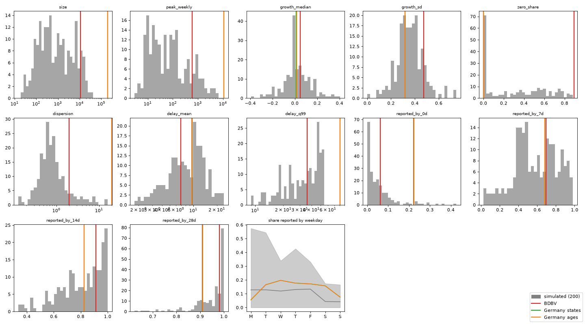
The held-out synthetic set
The held-out set is 100 outbreaks simulated with scripts/finetune_simulate.R on the r2-cal5 grid, 25 for each of the seeds 9001, 9002, 9003 and 9004. The fine-tune never used these seeds, so the held-out outbreaks are new draws from the grid it was trained on. If an outbreak’s design failed five times and was skipped, a further seed tops the set up to 100. They are written to output/finetune/heldout, as counts-<seed>.csv.gz and settings-<seed>.csv. The evaluation workflow (paper/workflow/Snakefile) runs the models on the set in its paper target only.
The held-out set was reserved for the final evaluation. No model was scored on it during development, and no forecast or score from it was looked at. One early run of the pipeline forecast three held-out outbreaks before this rule was set, and its outputs were deleted unread. We checked the pipeline end to end on a separate validation set of five outbreaks with seed 7001, in output/finetune/validation.
The German benchmark is split the same way. Its nowcast dates from 2022-02-10 are held out, and development runs read no forecast from them. Development runs read the German data only up to the release D = 40 days after the last development date, 2022-03-21, which the truth of that date needs. The evaluation workflow checks both, and fails a development run that reads later data.
Protocol
Each outbreak is released weekly, on one weekday from Wednesday to Saturday drawn from its id, as for the fine-tune’s training blocks. A release’s cut-off is its origin date. Each outbreak has four origins, spread evenly from its sixth release to the last release at least its longest delay (3 to 12 weeks) plus 5 weeks before its last report. Each forecast covers eight weeks of onsets, from four weeks before the week of the cut-off to three weeks after it. Every model forecasts weekly totals by onset week, for the country and each place, with 200 samples (n_samples in the workflow config). The Chronos-2 models keep their own release lag of 4 weeks (weekly) or 28 days (daily). The scores use rolling truth, the count reported D days after the end of a target week, with D the outbreak’s own 98% reporting delay in whole days. The final simulated count is kept as well. Scores are relative to randomwalknowcast.
Scoring
- Scoring, and its check against scoringutils.
- Key references: (Bosse et al. 2022; Jordan, Krüger, and Lerch 2019; Zanetta and Allen 2024).
Implementation
- The tools we used, each cited: Python, PyTorch on the laptop GPU, chronos-forecasting, PEFT for LoRA, R and epinowcast for simulation, and scoringrules for scoring, checked against scoringutils.
- The evaluation runs as a Snakemake workflow, so every result can be reproduced from the raw data.
Results
- Score breakdowns by location and horizon for each case study.
- WIS over time for each case study.
- Held-out synthetic scores by number of fine-tuning outbreaks.
Held-out synthetic data
| factor | min | median | max | n_locations |
|---|---|---|---|---|
| delay_mean | 2.17 | 4.31 | 7.71 | 8 |
| delay_q98 | 11 | 19.5 | 62 | 8 |
| gt_mean | 6.2 | 15.1 | 19.1 | 8 |
| log_r0 | -0.49 | 0.215 | 0.89 | 8 |
| n_places | 1 | 2.5 | 12 | 8 |
| report_days | 5 | 5 | 7 | 8 |
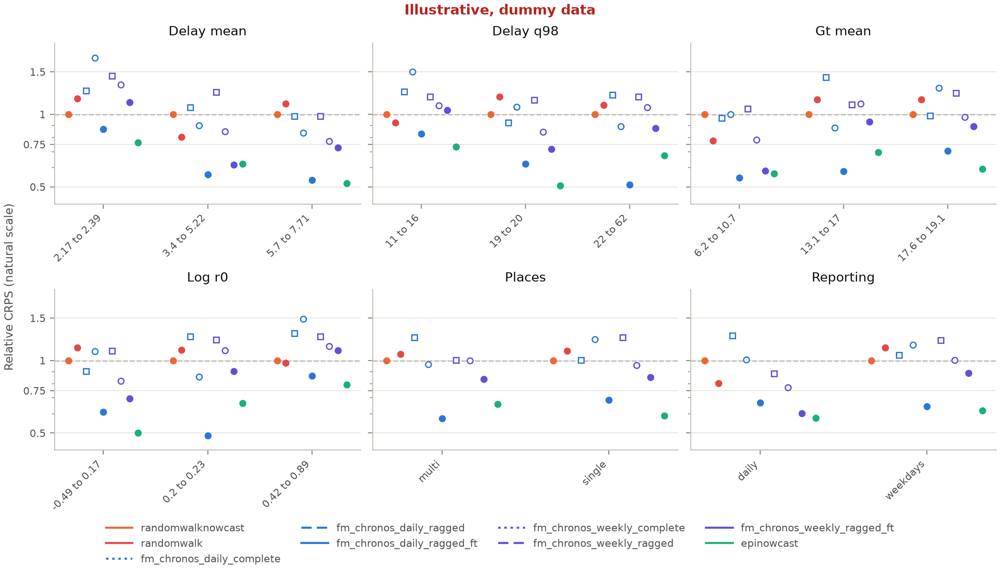
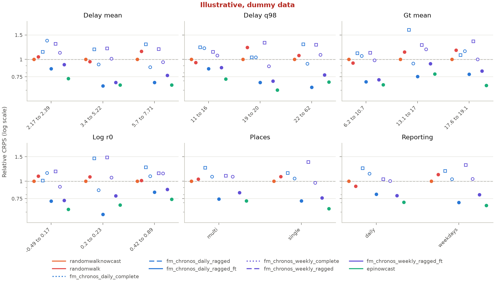
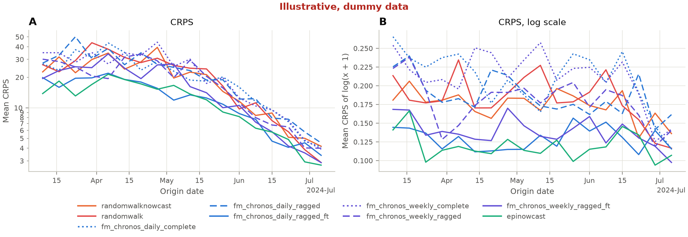
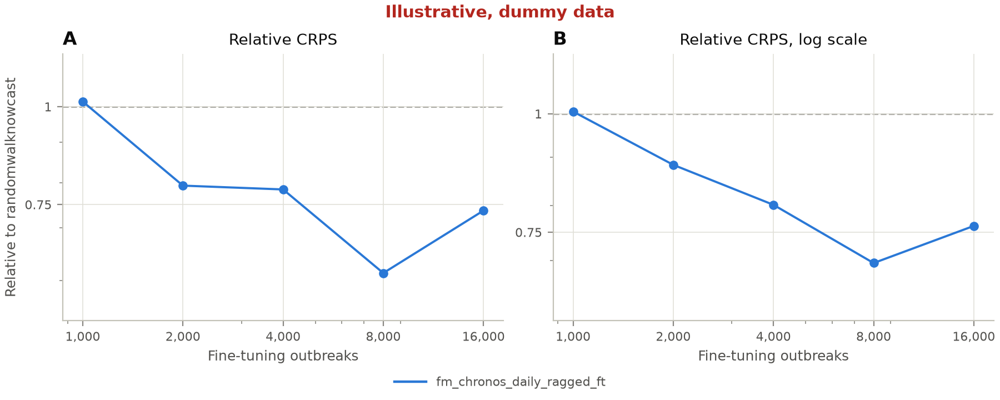
| study | model | metric | horizon | score | log_score | bias | coverage_50 | coverage_90 | n | rel_score | rel_log_score |
|---|---|---|---|---|---|---|---|---|---|---|---|
| synthetic | epinowcast | crps | -28 | 5.4 | 0.0531 | 0.216 | 0.504 | 0.876 | 129 | 0.689 | 0.748 |
| synthetic | epinowcast | crps | -21 | 5.17 | 0.0502 | 0.192 | 0.563 | 0.859 | 135 | 0.781 | 0.71 |
| synthetic | epinowcast | crps | -14 | 5.52 | 0.0598 | 0.195 | 0.518 | 0.885 | 139 | 0.711 | 0.802 |
| synthetic | epinowcast | crps | -7 | 6.55 | 0.0682 | 0.18 | 0.493 | 0.9 | 140 | 0.737 | 0.774 |
| synthetic | epinowcast | crps | 0 | 12.6 | 0.121 | 0.0108 | 0.489 | 0.827 | 139 | 0.67 | 0.68 |
| synthetic | epinowcast | crps | 7 | 13.8 | 0.149 | 0.125 | 0.542 | 0.947 | 131 | 0.53 | 0.624 |
| synthetic | epinowcast | crps | 14 | 24.5 | 0.202 | 0.122 | 0.561 | 0.902 | 123 | 0.566 | 0.612 |
| synthetic | epinowcast | crps | 21 | 31.1 | 0.287 | 0.101 | 0.513 | 0.809 | 115 | 0.595 | 0.709 |
| synthetic | fm_chronos_daily_complete | crps | -28 | 10.1 | 0.0856 | -0.381 | 0.395 | 0.775 | 129 | 1.29 | 1.21 |
| synthetic | fm_chronos_daily_complete | crps | -21 | 9.1 | 0.0953 | -0.482 | 0.385 | 0.77 | 135 | 1.37 | 1.35 |
| synthetic | fm_chronos_daily_complete | crps | -14 | 9.72 | 0.0964 | -0.342 | 0.381 | 0.827 | 139 | 1.25 | 1.29 |
| synthetic | fm_chronos_daily_complete | crps | -7 | 11.5 | 0.112 | -0.273 | 0.414 | 0.829 | 140 | 1.29 | 1.27 |
| synthetic | fm_chronos_daily_complete | crps | 0 | 22.4 | 0.199 | -0.0993 | 0.446 | 0.813 | 139 | 1.2 | 1.12 |
| synthetic | fm_chronos_daily_complete | crps | 7 | 30.2 | 0.308 | -0.154 | 0.427 | 0.847 | 131 | 1.16 | 1.29 |
| synthetic | fm_chronos_daily_complete | crps | 14 | 48.3 | 0.406 | 0.0666 | 0.447 | 0.829 | 123 | 1.11 | 1.23 |
| synthetic | fm_chronos_daily_complete | crps | 21 | 42.8 | 0.444 | -0.11 | 0.53 | 0.887 | 115 | 0.819 | 1.09 |
| synthetic | fm_chronos_daily_ragged | crps | -28 | 11.6 | 0.0831 | 0.556 | 0.302 | 0.674 | 129 | 1.48 | 1.17 |
| synthetic | fm_chronos_daily_ragged | crps | -21 | 13.8 | 0.109 | 0.63 | 0.252 | 0.533 | 135 | 2.09 | 1.55 |
| synthetic | fm_chronos_daily_ragged | crps | -14 | 13.2 | 0.115 | 0.584 | 0.259 | 0.547 | 139 | 1.7 | 1.54 |
| synthetic | fm_chronos_daily_ragged | crps | -7 | 12.9 | 0.114 | 0.383 | 0.35 | 0.657 | 140 | 1.46 | 1.29 |
| synthetic | fm_chronos_daily_ragged | crps | 0 | 17.7 | 0.172 | 0.282 | 0.396 | 0.748 | 139 | 0.941 | 0.969 |
| synthetic | fm_chronos_daily_ragged | crps | 7 | 28.6 | 0.232 | 0.191 | 0.389 | 0.786 | 131 | 1.1 | 0.974 |
| synthetic | fm_chronos_daily_ragged | crps | 14 | 39.8 | 0.321 | 0.217 | 0.39 | 0.724 | 123 | 0.919 | 0.973 |
| synthetic | fm_chronos_daily_ragged | crps | 21 | 56.7 | 0.395 | 0.0441 | 0.348 | 0.765 | 115 | 1.08 | 0.974 |
| synthetic | fm_chronos_daily_ragged_ft | crps | -28 | 5.3 | 0.0519 | 0.166 | 0.535 | 0.884 | 129 | 0.676 | 0.732 |
| synthetic | fm_chronos_daily_ragged_ft | crps | -21 | 5.38 | 0.0569 | 0.152 | 0.541 | 0.874 | 135 | 0.813 | 0.805 |
| synthetic | fm_chronos_daily_ragged_ft | crps | -14 | 5.99 | 0.0581 | 0.107 | 0.525 | 0.885 | 139 | 0.772 | 0.778 |
| synthetic | fm_chronos_daily_ragged_ft | crps | -7 | 7.04 | 0.0798 | 0.134 | 0.421 | 0.879 | 140 | 0.792 | 0.905 |
| synthetic | fm_chronos_daily_ragged_ft | crps | 0 | 10.6 | 0.115 | 0.0932 | 0.518 | 0.906 | 139 | 0.562 | 0.645 |
| synthetic | fm_chronos_daily_ragged_ft | crps | 7 | 16.5 | 0.174 | 0.0362 | 0.481 | 0.863 | 131 | 0.634 | 0.729 |
| synthetic | fm_chronos_daily_ragged_ft | crps | 14 | 26.6 | 0.228 | 0.0798 | 0.496 | 0.902 | 123 | 0.613 | 0.693 |
| synthetic | fm_chronos_daily_ragged_ft | crps | 21 | 33.7 | 0.305 | 0.0681 | 0.435 | 0.861 | 115 | 0.645 | 0.752 |
| synthetic | fm_chronos_weekly_complete | crps | -28 | 10.8 | 0.102 | -0.529 | 0.302 | 0.713 | 129 | 1.38 | 1.44 |
| synthetic | fm_chronos_weekly_complete | crps | -21 | 10.6 | 0.102 | -0.483 | 0.385 | 0.719 | 135 | 1.6 | 1.45 |
| synthetic | fm_chronos_weekly_complete | crps | -14 | 10.8 | 0.0993 | -0.42 | 0.432 | 0.791 | 139 | 1.39 | 1.33 |
| synthetic | fm_chronos_weekly_complete | crps | -7 | 13.7 | 0.131 | -0.268 | 0.436 | 0.814 | 140 | 1.54 | 1.48 |
| synthetic | fm_chronos_weekly_complete | crps | 0 | 17.7 | 0.183 | -0.189 | 0.54 | 0.878 | 139 | 0.941 | 1.03 |
| synthetic | fm_chronos_weekly_complete | crps | 7 | 30.5 | 0.285 | -0.0632 | 0.45 | 0.893 | 131 | 1.17 | 1.19 |
| synthetic | fm_chronos_weekly_complete | crps | 14 | 53.3 | 0.416 | -0.106 | 0.431 | 0.846 | 123 | 1.23 | 1.26 |
| synthetic | fm_chronos_weekly_complete | crps | 21 | 51.5 | 0.47 | -0.0654 | 0.426 | 0.896 | 115 | 0.985 | 1.16 |
| synthetic | fm_chronos_weekly_ragged | crps | -28 | 7.18 | 0.0696 | -0.215 | 0.442 | 0.783 | 129 | 0.916 | 0.98 |
| synthetic | fm_chronos_weekly_ragged | crps | -21 | 6.94 | 0.0701 | -0.0697 | 0.489 | 0.8 | 135 | 1.05 | 0.992 |
| synthetic | fm_chronos_weekly_ragged | crps | -14 | 8.15 | 0.0847 | -0.0581 | 0.446 | 0.755 | 139 | 1.05 | 1.14 |
| synthetic | fm_chronos_weekly_ragged | crps | -7 | 11.3 | 0.111 | -0.022 | 0.379 | 0.764 | 140 | 1.27 | 1.26 |
| synthetic | fm_chronos_weekly_ragged | crps | 0 | 16.3 | 0.161 | 0.00683 | 0.482 | 0.835 | 139 | 0.867 | 0.907 |
| synthetic | fm_chronos_weekly_ragged | crps | 7 | 28.6 | 0.267 | 0.00565 | 0.382 | 0.763 | 131 | 1.09 | 1.12 |
| synthetic | fm_chronos_weekly_ragged | crps | 14 | 30.8 | 0.309 | 0.0122 | 0.463 | 0.846 | 123 | 0.711 | 0.936 |
| synthetic | fm_chronos_weekly_ragged | crps | 21 | 57.2 | 0.427 | 0.0567 | 0.391 | 0.8 | 115 | 1.09 | 1.05 |
| synthetic | fm_chronos_weekly_ragged_ft | crps | -28 | 7.14 | 0.0608 | 0.315 | 0.543 | 0.845 | 129 | 0.912 | 0.857 |
| synthetic | fm_chronos_weekly_ragged_ft | crps | -21 | 7.54 | 0.0628 | 0.342 | 0.511 | 0.837 | 135 | 1.14 | 0.888 |
| synthetic | fm_chronos_weekly_ragged_ft | crps | -14 | 7.79 | 0.0627 | 0.254 | 0.547 | 0.899 | 139 | 1 | 0.84 |
| synthetic | fm_chronos_weekly_ragged_ft | crps | -7 | 7.97 | 0.0775 | 0.216 | 0.529 | 0.921 | 140 | 0.897 | 0.878 |
| synthetic | fm_chronos_weekly_ragged_ft | crps | 0 | 13.5 | 0.132 | 0.14 | 0.576 | 0.892 | 139 | 0.718 | 0.744 |
| synthetic | fm_chronos_weekly_ragged_ft | crps | 7 | 23.1 | 0.176 | 0.11 | 0.588 | 0.947 | 131 | 0.884 | 0.737 |
| synthetic | fm_chronos_weekly_ragged_ft | crps | 14 | 31.6 | 0.255 | 0.0405 | 0.472 | 0.886 | 123 | 0.73 | 0.774 |
| synthetic | fm_chronos_weekly_ragged_ft | crps | 21 | 46.8 | 0.333 | 0.14 | 0.53 | 0.817 | 115 | 0.895 | 0.82 |
| synthetic | randomwalk | crps | -28 | 8.52 | 0.0734 | -0.325 | 0.535 | 0.922 | 129 | 1.09 | 1.03 |
| synthetic | randomwalk | crps | -21 | 8.93 | 0.0787 | -0.296 | 0.504 | 0.911 | 135 | 1.35 | 1.11 |
| synthetic | randomwalk | crps | -14 | 9.5 | 0.088 | -0.248 | 0.518 | 0.95 | 139 | 1.22 | 1.18 |
| synthetic | randomwalk | crps | -7 | 9.76 | 0.102 | -0.147 | 0.55 | 0.979 | 140 | 1.1 | 1.15 |
| synthetic | randomwalk | crps | 0 | 21.1 | 0.185 | -0.0741 | 0.576 | 0.957 | 139 | 1.13 | 1.04 |
| synthetic | randomwalk | crps | 7 | 27.4 | 0.228 | -0.0545 | 0.71 | 0.962 | 131 | 1.05 | 0.955 |
| synthetic | randomwalk | crps | 14 | 44.5 | 0.344 | -0.0631 | 0.593 | 0.959 | 123 | 1.03 | 1.04 |
| synthetic | randomwalk | crps | 21 | 56.3 | 0.441 | -0.0797 | 0.617 | 0.957 | 115 | 1.08 | 1.09 |
| synthetic | randomwalknowcast | crps | -28 | 7.83 | 0.071 | 0.0999 | 0.612 | 0.953 | 129 | 1 | 1 |
| synthetic | randomwalknowcast | crps | -21 | 6.62 | 0.0707 | 0.0916 | 0.637 | 0.97 | 135 | 1 | 1 |
| synthetic | randomwalknowcast | crps | -14 | 7.76 | 0.0746 | 0.159 | 0.647 | 0.971 | 139 | 1 | 1 |
| synthetic | randomwalknowcast | crps | -7 | 8.88 | 0.0882 | 0.0927 | 0.707 | 0.971 | 140 | 1 | 1 |
| synthetic | randomwalknowcast | crps | 0 | 18.8 | 0.178 | 0.033 | 0.597 | 0.957 | 139 | 1 | 1 |
| synthetic | randomwalknowcast | crps | 7 | 26.1 | 0.239 | 0.135 | 0.725 | 0.969 | 131 | 1 | 1 |
| synthetic | randomwalknowcast | crps | 14 | 43.4 | 0.33 | 0.0618 | 0.675 | 0.967 | 123 | 1 | 1 |
| synthetic | randomwalknowcast | crps | 21 | 52.3 | 0.406 | -0.0158 | 0.643 | 0.974 | 115 | 1 | 1 |
| study | model | metric | location | stratum | score | log_score | bias | coverage_50 | coverage_90 | n | rel_score | rel_log_score |
|---|---|---|---|---|---|---|---|---|---|---|---|---|
| synthetic | epinowcast | crps | s7001-sim01 | all | 20.9 | 0.1 | 0.0235 | 0.463 | 0.889 | 108 | 0.719 | 0.823 |
| synthetic | epinowcast | crps | s7001-sim02 | all | 9.25 | 0.135 | 0.0711 | 0.496 | 0.859 | 135 | 0.656 | 0.764 |
| synthetic | epinowcast | crps | s7001-sim03 | all | 18.8 | 0.101 | 0.12 | 0.481 | 0.933 | 135 | 0.382 | 0.484 |
| synthetic | epinowcast | crps | s7001-sim04 | all | 7.13 | 0.11 | 0.106 | 0.62 | 0.876 | 137 | 0.564 | 0.597 |
| synthetic | epinowcast | crps | s7001-sim05 | all | 18.9 | 0.107 | 0.399 | 0.455 | 0.818 | 132 | 0.91 | 0.765 |
| synthetic | epinowcast | crps | s7001-sim06 | all | 4.85 | 0.147 | 0.0372 | 0.664 | 0.905 | 137 | 0.732 | 0.705 |
| synthetic | epinowcast | crps | s7001-sim07 | all | 3.85 | 0.158 | 0.212 | 0.447 | 0.841 | 132 | 0.444 | 0.663 |
| synthetic | epinowcast | crps | s7001-sim08 | all | 18.8 | 0.0949 | 0.162 | 0.533 | 0.889 | 135 | 0.751 | 0.817 |
| synthetic | fm_chronos_daily_complete | crps | s7001-sim01 | all | 38.3 | 0.209 | -0.419 | 0.269 | 0.731 | 108 | 1.32 | 1.72 |
| synthetic | fm_chronos_daily_complete | crps | s7001-sim02 | all | 22.5 | 0.281 | -0.13 | 0.437 | 0.83 | 135 | 1.6 | 1.59 |
| synthetic | fm_chronos_daily_complete | crps | s7001-sim03 | all | 31.8 | 0.174 | -0.331 | 0.393 | 0.741 | 135 | 0.646 | 0.832 |
| synthetic | fm_chronos_daily_complete | crps | s7001-sim04 | all | 14.4 | 0.244 | -0.288 | 0.401 | 0.803 | 137 | 1.14 | 1.33 |
| synthetic | fm_chronos_daily_complete | crps | s7001-sim05 | all | 25.2 | 0.164 | -0.152 | 0.402 | 0.871 | 132 | 1.21 | 1.17 |
| synthetic | fm_chronos_daily_complete | crps | s7001-sim06 | all | 6.13 | 0.219 | -0.265 | 0.445 | 0.854 | 137 | 0.925 | 1.05 |
| synthetic | fm_chronos_daily_complete | crps | s7001-sim07 | all | 6.26 | 0.234 | -0.0531 | 0.515 | 0.902 | 132 | 0.722 | 0.981 |
| synthetic | fm_chronos_daily_complete | crps | s7001-sim08 | all | 36.9 | 0.164 | -0.208 | 0.519 | 0.822 | 135 | 1.47 | 1.41 |
| synthetic | fm_chronos_daily_ragged | crps | s7001-sim01 | all | 25.8 | 0.118 | 0.312 | 0.398 | 0.787 | 108 | 0.886 | 0.971 |
| synthetic | fm_chronos_daily_ragged | crps | s7001-sim02 | all | 12.3 | 0.162 | 0.297 | 0.363 | 0.659 | 135 | 0.871 | 0.917 |
| synthetic | fm_chronos_daily_ragged | crps | s7001-sim03 | all | 39.5 | 0.17 | 0.41 | 0.267 | 0.63 | 135 | 0.802 | 0.81 |
| synthetic | fm_chronos_daily_ragged | crps | s7001-sim04 | all | 10.2 | 0.148 | 0.391 | 0.35 | 0.715 | 137 | 0.804 | 0.807 |
| synthetic | fm_chronos_daily_ragged | crps | s7001-sim05 | all | 42.6 | 0.198 | 0.423 | 0.326 | 0.667 | 132 | 2.05 | 1.41 |
| synthetic | fm_chronos_daily_ragged | crps | s7001-sim06 | all | 7.11 | 0.212 | 0.396 | 0.321 | 0.664 | 137 | 1.07 | 1.02 |
| synthetic | fm_chronos_daily_ragged | crps | s7001-sim07 | all | 10.7 | 0.31 | 0.314 | 0.386 | 0.652 | 132 | 1.23 | 1.3 |
| synthetic | fm_chronos_daily_ragged | crps | s7001-sim08 | all | 40.4 | 0.168 | 0.394 | 0.281 | 0.659 | 135 | 1.61 | 1.44 |
| synthetic | fm_chronos_daily_ragged_ft | crps | s7001-sim01 | all | 13.6 | 0.0702 | -0.0204 | 0.481 | 0.889 | 108 | 0.467 | 0.577 |
| synthetic | fm_chronos_daily_ragged_ft | crps | s7001-sim02 | all | 10.8 | 0.151 | 0.0147 | 0.481 | 0.896 | 135 | 0.768 | 0.852 |
| synthetic | fm_chronos_daily_ragged_ft | crps | s7001-sim03 | all | 24.4 | 0.123 | -0.00748 | 0.511 | 0.904 | 135 | 0.496 | 0.589 |
| synthetic | fm_chronos_daily_ragged_ft | crps | s7001-sim04 | all | 6.65 | 0.106 | 0.0326 | 0.569 | 0.912 | 137 | 0.526 | 0.579 |
| synthetic | fm_chronos_daily_ragged_ft | crps | s7001-sim05 | all | 21 | 0.142 | 0.351 | 0.439 | 0.795 | 132 | 1.01 | 1.02 |
| synthetic | fm_chronos_daily_ragged_ft | crps | s7001-sim06 | all | 4.2 | 0.146 | 0.0411 | 0.533 | 0.898 | 137 | 0.634 | 0.702 |
| synthetic | fm_chronos_daily_ragged_ft | crps | s7001-sim07 | all | 4.35 | 0.183 | 0.289 | 0.424 | 0.856 | 132 | 0.501 | 0.77 |
| synthetic | fm_chronos_daily_ragged_ft | crps | s7001-sim08 | all | 21.9 | 0.0991 | 0.129 | 0.511 | 0.904 | 135 | 0.874 | 0.853 |
| synthetic | fm_chronos_weekly_complete | crps | s7001-sim01 | all | 33 | 0.191 | -0.475 | 0.333 | 0.741 | 108 | 1.13 | 1.57 |
| synthetic | fm_chronos_weekly_complete | crps | s7001-sim02 | all | 14.5 | 0.196 | -0.214 | 0.496 | 0.844 | 135 | 1.03 | 1.11 |
| synthetic | fm_chronos_weekly_complete | crps | s7001-sim03 | all | 43.9 | 0.225 | -0.316 | 0.4 | 0.763 | 135 | 0.892 | 1.08 |
| synthetic | fm_chronos_weekly_complete | crps | s7001-sim04 | all | 17.4 | 0.265 | -0.267 | 0.496 | 0.847 | 137 | 1.37 | 1.44 |
| synthetic | fm_chronos_weekly_complete | crps | s7001-sim05 | all | 31.5 | 0.201 | -0.149 | 0.417 | 0.833 | 132 | 1.51 | 1.43 |
| synthetic | fm_chronos_weekly_complete | crps | s7001-sim06 | all | 6.4 | 0.206 | -0.265 | 0.453 | 0.847 | 137 | 0.966 | 0.989 |
| synthetic | fm_chronos_weekly_complete | crps | s7001-sim07 | all | 5.49 | 0.234 | -0.0997 | 0.515 | 0.886 | 132 | 0.633 | 0.981 |
| synthetic | fm_chronos_weekly_complete | crps | s7001-sim08 | all | 41.5 | 0.205 | -0.413 | 0.281 | 0.763 | 135 | 1.65 | 1.76 |
| synthetic | fm_chronos_weekly_ragged | crps | s7001-sim01 | all | 36.4 | 0.165 | -0.147 | 0.333 | 0.769 | 108 | 1.25 | 1.35 |
| synthetic | fm_chronos_weekly_ragged | crps | s7001-sim02 | all | 12.1 | 0.193 | -0.0946 | 0.437 | 0.763 | 135 | 0.86 | 1.09 |
| synthetic | fm_chronos_weekly_ragged | crps | s7001-sim03 | all | 25.7 | 0.139 | -0.0736 | 0.407 | 0.778 | 135 | 0.523 | 0.663 |
| synthetic | fm_chronos_weekly_ragged | crps | s7001-sim04 | all | 10.5 | 0.168 | -0.112 | 0.504 | 0.869 | 137 | 0.828 | 0.914 |
| synthetic | fm_chronos_weekly_ragged | crps | s7001-sim05 | all | 29.8 | 0.176 | 0.159 | 0.424 | 0.803 | 132 | 1.43 | 1.25 |
| synthetic | fm_chronos_weekly_ragged | crps | s7001-sim06 | all | 5.9 | 0.229 | -0.0977 | 0.467 | 0.781 | 137 | 0.891 | 1.1 |
| synthetic | fm_chronos_weekly_ragged | crps | s7001-sim07 | all | 5.46 | 0.224 | 0.104 | 0.447 | 0.788 | 132 | 0.629 | 0.94 |
| synthetic | fm_chronos_weekly_ragged | crps | s7001-sim08 | all | 37.1 | 0.152 | -0.0439 | 0.437 | 0.785 | 135 | 1.48 | 1.31 |
| synthetic | fm_chronos_weekly_ragged_ft | crps | s7001-sim01 | all | 31.8 | 0.14 | 0.0397 | 0.583 | 0.87 | 108 | 1.09 | 1.15 |
| synthetic | fm_chronos_weekly_ragged_ft | crps | s7001-sim02 | all | 9.35 | 0.144 | 0.146 | 0.585 | 0.941 | 135 | 0.664 | 0.813 |
| synthetic | fm_chronos_weekly_ragged_ft | crps | s7001-sim03 | all | 28.2 | 0.115 | 0.243 | 0.57 | 0.919 | 135 | 0.573 | 0.55 |
| synthetic | fm_chronos_weekly_ragged_ft | crps | s7001-sim04 | all | 6.98 | 0.109 | 0.0804 | 0.591 | 0.905 | 137 | 0.553 | 0.594 |
| synthetic | fm_chronos_weekly_ragged_ft | crps | s7001-sim05 | all | 31.8 | 0.158 | 0.458 | 0.432 | 0.78 | 132 | 1.53 | 1.13 |
| synthetic | fm_chronos_weekly_ragged_ft | crps | s7001-sim06 | all | 4.92 | 0.158 | 0.108 | 0.562 | 0.898 | 137 | 0.743 | 0.761 |
| synthetic | fm_chronos_weekly_ragged_ft | crps | s7001-sim07 | all | 4.35 | 0.183 | 0.244 | 0.508 | 0.856 | 132 | 0.501 | 0.769 |
| synthetic | fm_chronos_weekly_ragged_ft | crps | s7001-sim08 | all | 25.2 | 0.112 | 0.237 | 0.474 | 0.881 | 135 | 1.01 | 0.965 |
| synthetic | randomwalk | crps | s7001-sim01 | all | 38.7 | 0.181 | -0.27 | 0.472 | 0.944 | 108 | 1.33 | 1.49 |
| synthetic | randomwalk | crps | s7001-sim02 | all | 12.1 | 0.166 | -0.121 | 0.667 | 0.963 | 135 | 0.859 | 0.936 |
| synthetic | randomwalk | crps | s7001-sim03 | all | 52.6 | 0.244 | -0.168 | 0.578 | 0.948 | 135 | 1.07 | 1.17 |
| synthetic | randomwalk | crps | s7001-sim04 | all | 8.82 | 0.158 | -0.292 | 0.584 | 0.956 | 137 | 0.699 | 0.862 |
| synthetic | randomwalk | crps | s7001-sim05 | all | 21.9 | 0.146 | -0.0563 | 0.553 | 0.955 | 132 | 1.05 | 1.04 |
| synthetic | randomwalk | crps | s7001-sim06 | all | 6.64 | 0.22 | -0.218 | 0.555 | 0.934 | 137 | 1 | 1.06 |
| synthetic | randomwalk | crps | s7001-sim07 | all | 6.2 | 0.216 | -0.0047 | 0.621 | 0.932 | 132 | 0.715 | 0.908 |
| synthetic | randomwalk | crps | s7001-sim08 | all | 35.2 | 0.153 | -0.188 | 0.541 | 0.963 | 135 | 1.4 | 1.32 |
| synthetic | randomwalknowcast | crps | s7001-sim01 | all | 29.1 | 0.122 | -0.00463 | 0.611 | 0.963 | 108 | 1 | 1 |
| synthetic | randomwalknowcast | crps | s7001-sim02 | all | 14.1 | 0.177 | 0.0361 | 0.644 | 0.985 | 135 | 1 | 1 |
| synthetic | randomwalknowcast | crps | s7001-sim03 | all | 49.3 | 0.209 | 0.0698 | 0.615 | 0.97 | 135 | 1 | 1 |
| synthetic | randomwalknowcast | crps | s7001-sim04 | all | 12.6 | 0.184 | 0.0123 | 0.657 | 0.971 | 137 | 1 | 1 |
| synthetic | randomwalknowcast | crps | s7001-sim05 | all | 20.8 | 0.14 | 0.214 | 0.697 | 0.962 | 132 | 1 | 1 |
| synthetic | randomwalknowcast | crps | s7001-sim06 | all | 6.62 | 0.208 | 0.0144 | 0.679 | 0.971 | 137 | 1 | 1 |
| synthetic | randomwalknowcast | crps | s7001-sim07 | all | 8.67 | 0.238 | 0.24 | 0.629 | 0.962 | 132 | 1 | 1 |
| synthetic | randomwalknowcast | crps | s7001-sim08 | all | 25.1 | 0.116 | 0.0813 | 0.704 | 0.948 | 135 | 1 | 1 |
German nowcast hub
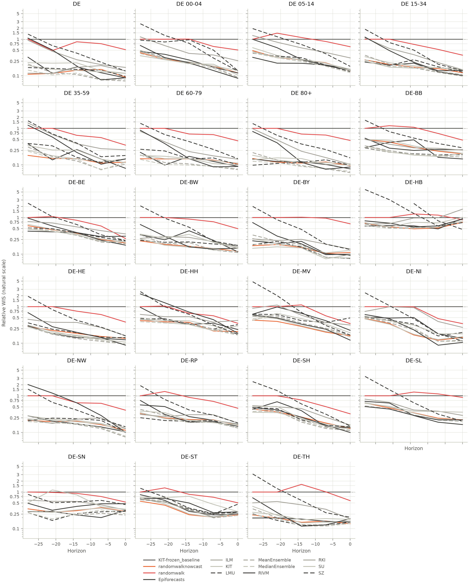
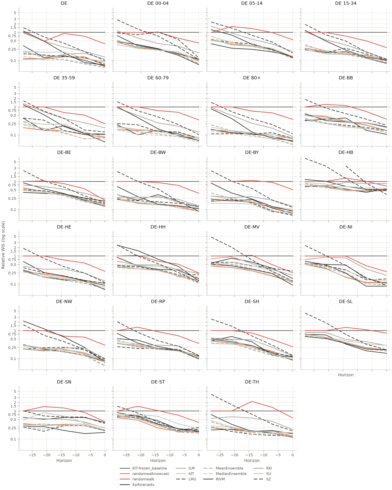
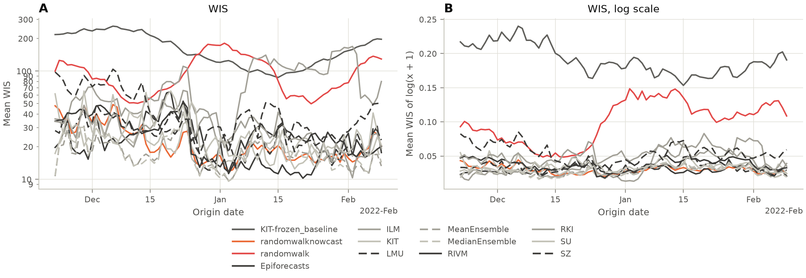
| study | model | metric | horizon | score | log_score | bias | coverage_50 | coverage_95 | n | rel_score | rel_log_score |
|---|---|---|---|---|---|---|---|---|---|---|---|
| germany | Epiforecasts | wis | -28 | 5.11 | 0.00657 | -0.192 | 0.444 | 0.774 | 1837 | 0.302 | 0.411 |
| germany | Epiforecasts | wis | -21 | 6.96 | 0.0117 | 0.126 | 0.378 | 0.763 | 1837 | 0.186 | 0.339 |
| germany | Epiforecasts | wis | -14 | 17.8 | 0.0218 | 0.232 | 0.306 | 0.701 | 1837 | 0.217 | 0.281 |
| germany | Epiforecasts | wis | -7 | 28.1 | 0.0344 | 0.0579 | 0.336 | 0.762 | 1837 | 0.144 | 0.177 |
| germany | Epiforecasts | wis | 0 | 55 | 0.0764 | -0.0418 | 0.413 | 0.872 | 1837 | 0.111 | 0.121 |
| germany | ILM | wis | -28 | 37.4 | 0.0194 | 0.783 | 0.214 | 0.61 | 518 | 0.98 | 1.15 |
| germany | ILM | wis | -21 | 40.5 | 0.0218 | 0.717 | 0.282 | 0.689 | 560 | 0.494 | 0.61 |
| germany | ILM | wis | -14 | 50.9 | 0.0277 | 0.662 | 0.305 | 0.725 | 560 | 0.284 | 0.358 |
| germany | ILM | wis | -7 | 88.2 | 0.0464 | 0.615 | 0.334 | 0.605 | 560 | 0.207 | 0.245 |
| germany | ILM | wis | 0 | 178 | 0.0891 | 0.611 | 0.261 | 0.546 | 518 | 0.17 | 0.143 |
| germany | KIT | wis | -28 | 4.32 | 0.00684 | 0.125 | 0.608 | 0.935 | 1840 | 0.256 | 0.428 |
| germany | KIT | wis | -21 | 7.31 | 0.0111 | 0.0219 | 0.566 | 0.932 | 1840 | 0.195 | 0.32 |
| germany | KIT | wis | -14 | 14 | 0.0191 | -0.0356 | 0.497 | 0.929 | 1840 | 0.171 | 0.246 |
| germany | KIT | wis | -7 | 29 | 0.0366 | -0.0226 | 0.467 | 0.929 | 1840 | 0.149 | 0.188 |
| germany | KIT | wis | 0 | 67.9 | 0.0865 | -0.0386 | 0.493 | 0.917 | 1840 | 0.137 | 0.137 |
| germany | KIT-frozen_baseline | wis | -28 | 16.9 | 0.016 | -0.843 | 0.114 | 0.114 | 1840 | 1 | 1 |
| germany | KIT-frozen_baseline | wis | -21 | 37.4 | 0.0347 | -0.92 | 0.0538 | 0.0538 | 1840 | 1 | 1 |
| germany | KIT-frozen_baseline | wis | -14 | 81.9 | 0.0778 | -0.974 | 0.0185 | 0.0185 | 1840 | 1 | 1 |
| germany | KIT-frozen_baseline | wis | -7 | 194 | 0.195 | -0.99 | 0 | 0 | 1840 | 1 | 1 |
| germany | KIT-frozen_baseline | wis | 0 | 496 | 0.63 | -0.979 | 0 | 0 | 1840 | 1 | 1 |
| germany | LMU | wis | -28 | 4.36 | 0.00637 | -0.163 | 0.41 | 0.77 | 1699 | 0.239 | 0.388 |
| germany | LMU | wis | -21 | 8.73 | 0.0117 | -0.108 | 0.292 | 0.672 | 1699 | 0.216 | 0.327 |
| germany | LMU | wis | -14 | 16 | 0.0218 | 0.184 | 0.232 | 0.557 | 1699 | 0.181 | 0.273 |
| germany | LMU | wis | -7 | 33.7 | 0.0396 | 0.0559 | 0.193 | 0.517 | 1699 | 0.16 | 0.198 |
| germany | LMU | wis | 0 | 69.2 | 0.0898 | 0.0541 | 0.217 | 0.536 | 1699 | 0.129 | 0.137 |
| germany | MeanEnsemble | wis | -28 | 4.61 | 0.00682 | 0.203 | 0.473 | 0.834 | 1840 | 0.273 | 0.426 |
| germany | MeanEnsemble | wis | -21 | 6.81 | 0.0108 | 0.203 | 0.436 | 0.832 | 1840 | 0.182 | 0.312 |
| germany | MeanEnsemble | wis | -14 | 12 | 0.018 | 0.205 | 0.39 | 0.796 | 1840 | 0.146 | 0.232 |
| germany | MeanEnsemble | wis | -7 | 20.8 | 0.0317 | 0.139 | 0.389 | 0.819 | 1840 | 0.107 | 0.163 |
| germany | MeanEnsemble | wis | 0 | 46.4 | 0.0687 | 0.119 | 0.406 | 0.862 | 1817 | 0.0942 | 0.109 |
| germany | MedianEnsemble | wis | -28 | 3.48 | 0.00576 | 0.0753 | 0.546 | 0.907 | 1840 | 0.206 | 0.36 |
| germany | MedianEnsemble | wis | -21 | 5.91 | 0.0097 | 0.117 | 0.454 | 0.864 | 1840 | 0.158 | 0.279 |
| germany | MedianEnsemble | wis | -14 | 12.1 | 0.0177 | 0.165 | 0.372 | 0.782 | 1840 | 0.148 | 0.227 |
| germany | MedianEnsemble | wis | -7 | 21.8 | 0.0327 | 0.11 | 0.351 | 0.776 | 1840 | 0.112 | 0.168 |
| germany | MedianEnsemble | wis | 0 | 49.1 | 0.0703 | 0.081 | 0.387 | 0.82 | 1817 | 0.0997 | 0.112 |
| germany | RIVM | wis | -28 | 16.4 | 0.0154 | 0.672 | 0.243 | 0.515 | 1840 | 0.972 | 0.963 |
| germany | RIVM | wis | -21 | 18.2 | 0.0193 | 0.579 | 0.229 | 0.532 | 1840 | 0.487 | 0.557 |
| germany | RIVM | wis | -14 | 18.7 | 0.026 | 0.392 | 0.224 | 0.546 | 1840 | 0.228 | 0.334 |
| germany | RIVM | wis | -7 | 26 | 0.043 | 0.242 | 0.243 | 0.574 | 1840 | 0.134 | 0.221 |
| germany | RIVM | wis | 0 | 60.5 | 0.0843 | 0.103 | 0.225 | 0.599 | 1840 | 0.122 | 0.134 |
| germany | RKI | wis | -28 | 4.19 | 0.00819 | -0.0231 | 0.288 | 0.441 | 1360 | 0.275 | 0.52 |
| germany | RKI | wis | -21 | 8.6 | 0.016 | 0.192 | 0.208 | 0.339 | 1360 | 0.255 | 0.465 |
| germany | RKI | wis | -14 | 20 | 0.0322 | 0.252 | 0.117 | 0.229 | 1360 | 0.27 | 0.411 |
| germany | RKI | wis | -7 | 41.7 | 0.0611 | 0.323 | 0.0757 | 0.201 | 1360 | 0.238 | 0.309 |
| germany | RKI | wis | 0 | 76 | 0.127 | 0.331 | 0.128 | 0.307 | 1360 | 0.17 | 0.201 |
| germany | SU | wis | -28 | 4.57 | 0.00659 | -0.0846 | 0.473 | 0.833 | 1840 | 0.271 | 0.412 |
| germany | SU | wis | -21 | 10.8 | 0.0134 | 0.0714 | 0.38 | 0.782 | 1840 | 0.288 | 0.385 |
| germany | SU | wis | -14 | 20.9 | 0.0244 | 0.106 | 0.337 | 0.72 | 1840 | 0.255 | 0.313 |
| germany | SU | wis | -7 | 30.7 | 0.0405 | 0.114 | 0.326 | 0.755 | 1840 | 0.158 | 0.208 |
| germany | SU | wis | 0 | 64.7 | 0.0855 | 0.191 | 0.365 | 0.813 | 1840 | 0.131 | 0.136 |
| germany | SZ | wis | -28 | 26.4 | 0.0349 | -0.276 | 0.0311 | 0.119 | 1771 | 1.54 | 2.17 |
| germany | SZ | wis | -21 | 27.3 | 0.0357 | -0.264 | 0.0924 | 0.252 | 1840 | 0.729 | 1.03 |
| germany | SZ | wis | -14 | 36.5 | 0.0429 | -0.249 | 0.146 | 0.368 | 1840 | 0.446 | 0.552 |
| germany | SZ | wis | -7 | 49.4 | 0.0563 | -0.152 | 0.207 | 0.512 | 1840 | 0.254 | 0.289 |
| germany | SZ | wis | 0 | 80.9 | 0.0985 | -0.0429 | 0.264 | 0.588 | 1840 | 0.163 | 0.156 |
| germany | randomwalk | wis | -28 | 16.9 | 0.016 | -0.843 | 0.114 | 0.114 | 1840 | 1 | 1 |
| germany | randomwalk | wis | -21 | 31.7 | 0.0387 | -0.773 | 0.11 | 0.164 | 1840 | 0.847 | 1.11 |
| germany | randomwalk | wis | -14 | 67.2 | 0.076 | -0.255 | 0.291 | 0.641 | 1840 | 0.821 | 0.977 |
| germany | randomwalk | wis | -7 | 138 | 0.135 | -0.129 | 0.297 | 0.739 | 1840 | 0.709 | 0.695 |
| germany | randomwalk | wis | 0 | 237 | 0.232 | -0.0996 | 0.25 | 0.679 | 1840 | 0.477 | 0.368 |
| germany | randomwalknowcast | wis | -28 | 3.37 | 0.00605 | -0.226 | 0.636 | 0.917 | 1840 | 0.2 | 0.378 |
| germany | randomwalknowcast | wis | -21 | 6.56 | 0.0103 | -0.162 | 0.534 | 0.892 | 1840 | 0.175 | 0.297 |
| germany | randomwalknowcast | wis | -14 | 13.9 | 0.0188 | -0.131 | 0.458 | 0.882 | 1840 | 0.17 | 0.241 |
| germany | randomwalknowcast | wis | -7 | 30.3 | 0.0362 | -0.067 | 0.441 | 0.866 | 1840 | 0.156 | 0.186 |
| germany | randomwalknowcast | wis | 0 | 59 | 0.0786 | -0.0973 | 0.559 | 0.946 | 1840 | 0.119 | 0.125 |
| study | model | metric | location | stratum | score | log_score | bias | coverage_50 | coverage_95 | n | rel_score | rel_log_score |
|---|---|---|---|---|---|---|---|---|---|---|---|---|
| germany | Epiforecasts | wis | DE | 00-04 | 3.37 | 0.0199 | -0.366 | 0.422 | 0.902 | 400 | 0.155 | 0.149 |
| germany | Epiforecasts | wis | DE | 05-14 | 4.74 | 0.0282 | 0.0209 | 0.44 | 0.853 | 400 | 0.175 | 0.178 |
| germany | Epiforecasts | wis | DE | 15-34 | 14.8 | 0.0184 | -0.00588 | 0.37 | 0.835 | 400 | 0.123 | 0.104 |
| germany | Epiforecasts | wis | DE | 35-59 | 40.5 | 0.0202 | -0.188 | 0.233 | 0.623 | 400 | 0.121 | 0.087 |
| germany | Epiforecasts | wis | DE | 60-79 | 47.6 | 0.0182 | -0.179 | 0.28 | 0.69 | 400 | 0.111 | 0.0836 |
| germany | Epiforecasts | wis | DE | 80+ | 31 | 0.0147 | -0.14 | 0.307 | 0.795 | 400 | 0.0928 | 0.0735 |
| germany | Epiforecasts | wis | DE | all | 140 | 0.0174 | -0.323 | 0.215 | 0.527 | 400 | 0.11 | 0.0842 |
| germany | Epiforecasts | wis | DE-BB | all | 9.79 | 0.038 | 0.388 | 0.355 | 0.777 | 400 | 0.208 | 0.159 |
| germany | Epiforecasts | wis | DE-BE | all | 9.62 | 0.0378 | 0.134 | 0.403 | 0.792 | 400 | 0.323 | 0.236 |
| germany | Epiforecasts | wis | DE-BW | all | 30.3 | 0.0265 | -0.0144 | 0.318 | 0.693 | 400 | 0.18 | 0.132 |
| germany | Epiforecasts | wis | DE-BY | all | 27 | 0.02 | -0.0891 | 0.297 | 0.713 | 400 | 0.116 | 0.0995 |
| germany | Epiforecasts | wis | DE-HB | all | 4.99 | 0.0538 | 0.208 | 0.608 | 0.87 | 400 | 0.786 | 0.522 |
| germany | Epiforecasts | wis | DE-HE | all | 9.66 | 0.0201 | -0.0975 | 0.42 | 0.9 | 400 | 0.133 | 0.108 |
| germany | Epiforecasts | wis | DE-HH | all | 9.23 | 0.0566 | -0.121 | 0.478 | 0.826 | 385 | 0.288 | 0.219 |
| germany | Epiforecasts | wis | DE-MV | all | 10.1 | 0.0438 | 0.349 | 0.33 | 0.735 | 400 | 0.324 | 0.249 |
| germany | Epiforecasts | wis | DE-NI | all | 8.45 | 0.0241 | 0.25 | 0.398 | 0.78 | 400 | 0.183 | 0.152 |
| germany | Epiforecasts | wis | DE-NW | all | 30.6 | 0.0225 | -0.139 | 0.31 | 0.67 | 400 | 0.125 | 0.103 |
| germany | Epiforecasts | wis | DE-RP | all | 13 | 0.0404 | 0.161 | 0.32 | 0.718 | 400 | 0.211 | 0.17 |
| germany | Epiforecasts | wis | DE-SH | all | 4.82 | 0.0265 | 0.301 | 0.435 | 0.86 | 400 | 0.181 | 0.162 |
| germany | Epiforecasts | wis | DE-SL | all | 1.23 | 0.0228 | 0.195 | 0.667 | 0.98 | 400 | 0.217 | 0.217 |
| germany | Epiforecasts | wis | DE-SN | all | 37.2 | 0.0503 | 0.153 | 0.305 | 0.757 | 400 | 0.27 | 0.181 |
| germany | Epiforecasts | wis | DE-ST | all | 21.3 | 0.0548 | 0.00125 | 0.335 | 0.64 | 400 | 0.344 | 0.253 |
| germany | Epiforecasts | wis | DE-TH | all | 9.99 | 0.0202 | 0.333 | 0.39 | 0.875 | 400 | 0.158 | 0.134 |
| germany | ILM | wis | DE | 00-04 | 6.95 | 0.035 | 0.363 | 0.402 | 0.714 | 388 | 0.321 | 0.268 |
| germany | ILM | wis | DE | 05-14 | 10.9 | 0.0551 | 0.647 | 0.157 | 0.474 | 388 | 0.413 | 0.358 |
| germany | ILM | wis | DE | 15-34 | 25.3 | 0.0303 | 0.696 | 0.348 | 0.755 | 388 | 0.215 | 0.177 |
| germany | ILM | wis | DE | 35-59 | 101 | 0.0554 | 0.822 | 0.191 | 0.546 | 388 | 0.313 | 0.247 |
| germany | ILM | wis | DE | 60-79 | 79.2 | 0.039 | 0.74 | 0.278 | 0.686 | 388 | 0.193 | 0.184 |
| germany | ILM | wis | DE | 80+ | 56.1 | 0.0301 | 0.653 | 0.369 | 0.698 | 388 | 0.175 | 0.154 |
| germany | ILM | wis | DE | all | 267 | 0.0383 | 0.818 | 0.219 | 0.585 | 388 | 0.219 | 0.191 |
| germany | KIT | wis | DE | 00-04 | 3.6 | 0.0203 | -0.119 | 0.583 | 0.948 | 400 | 0.165 | 0.152 |
| germany | KIT | wis | DE | 05-14 | 5.35 | 0.0329 | 0.118 | 0.477 | 0.902 | 400 | 0.198 | 0.208 |
| germany | KIT | wis | DE | 15-34 | 18.9 | 0.0234 | -0.00188 | 0.537 | 0.988 | 400 | 0.157 | 0.132 |
| germany | KIT | wis | DE | 35-59 | 48 | 0.0259 | 0.138 | 0.557 | 0.99 | 400 | 0.143 | 0.111 |
| germany | KIT | wis | DE | 60-79 | 53.2 | 0.0217 | 0.0908 | 0.527 | 0.988 | 400 | 0.124 | 0.0994 |
| germany | KIT | wis | DE | 80+ | 38.1 | 0.0185 | 0.0751 | 0.59 | 0.988 | 400 | 0.114 | 0.0927 |
| germany | KIT | wis | DE | all | 157 | 0.0209 | 0.0929 | 0.56 | 0.993 | 400 | 0.124 | 0.101 |
| germany | KIT | wis | DE-BB | all | 12.1 | 0.0492 | -0.151 | 0.588 | 0.912 | 400 | 0.256 | 0.206 |
| germany | KIT | wis | DE-BE | all | 7.86 | 0.0334 | 0.0665 | 0.463 | 0.91 | 400 | 0.263 | 0.209 |
| germany | KIT | wis | DE-BW | all | 24.8 | 0.0235 | 0.128 | 0.502 | 0.963 | 400 | 0.147 | 0.118 |
| germany | KIT | wis | DE-BY | all | 30.7 | 0.0243 | 0.266 | 0.455 | 0.875 | 400 | 0.131 | 0.121 |
| germany | KIT | wis | DE-HB | all | 4.58 | 0.0527 | -0.0318 | 0.58 | 0.858 | 400 | 0.721 | 0.512 |
| germany | KIT | wis | DE-HE | all | 10.9 | 0.023 | -0.244 | 0.525 | 0.93 | 400 | 0.15 | 0.123 |
| germany | KIT | wis | DE-HH | all | 9.57 | 0.0527 | -0.0104 | 0.527 | 0.943 | 400 | 0.289 | 0.202 |
| germany | KIT | wis | DE-MV | all | 6.17 | 0.0287 | -0.0261 | 0.502 | 0.93 | 400 | 0.199 | 0.163 |
| germany | KIT | wis | DE-NI | all | 7.28 | 0.0211 | -0.0126 | 0.547 | 0.907 | 400 | 0.157 | 0.133 |
| germany | KIT | wis | DE-NW | all | 37.1 | 0.0271 | -0.119 | 0.522 | 0.955 | 400 | 0.152 | 0.124 |
| germany | KIT | wis | DE-RP | all | 11.6 | 0.0369 | 0.0598 | 0.42 | 0.885 | 400 | 0.188 | 0.155 |
| germany | KIT | wis | DE-SH | all | 4.41 | 0.0247 | -0.267 | 0.62 | 0.897 | 400 | 0.165 | 0.151 |
| germany | KIT | wis | DE-SL | all | 1.46 | 0.0269 | -0.016 | 0.632 | 0.938 | 400 | 0.257 | 0.256 |
| germany | KIT | wis | DE-SN | all | 43.3 | 0.0717 | 0.0872 | 0.525 | 0.94 | 400 | 0.314 | 0.258 |
| germany | KIT | wis | DE-ST | all | 16.8 | 0.051 | -0.106 | 0.405 | 0.802 | 400 | 0.271 | 0.236 |
| germany | KIT | wis | DE-TH | all | 10.4 | 0.0261 | 0.212 | 0.458 | 0.917 | 400 | 0.164 | 0.172 |
| germany | KIT-frozen_baseline | wis | DE | 00-04 | 21.8 | 0.133 | -0.912 | 0.0625 | 0.0625 | 400 | 1 | 1 |
| germany | KIT-frozen_baseline | wis | DE | 05-14 | 27.1 | 0.159 | -0.875 | 0.035 | 0.035 | 400 | 1 | 1 |
| germany | KIT-frozen_baseline | wis | DE | 15-34 | 120 | 0.177 | -1 | 0 | 0 | 400 | 1 | 1 |
| germany | KIT-frozen_baseline | wis | DE | 35-59 | 335 | 0.232 | -1 | 0 | 0 | 400 | 1 | 1 |
| germany | KIT-frozen_baseline | wis | DE | 60-79 | 427 | 0.218 | -1 | 0 | 0 | 400 | 1 | 1 |
| germany | KIT-frozen_baseline | wis | DE | 80+ | 334 | 0.2 | -1 | 0 | 0 | 400 | 1 | 1 |
| germany | KIT-frozen_baseline | wis | DE | all | 1.27e+03 | 0.207 | -1 | 0 | 0 | 400 | 1 | 1 |
| germany | KIT-frozen_baseline | wis | DE-BB | all | 47.2 | 0.239 | -0.988 | 0.0075 | 0.0075 | 400 | 1 | 1 |
| germany | KIT-frozen_baseline | wis | DE-BE | all | 29.8 | 0.16 | -0.948 | 0.0425 | 0.0425 | 400 | 1 | 1 |
| germany | KIT-frozen_baseline | wis | DE-BW | all | 169 | 0.2 | -1 | 0 | 0 | 400 | 1 | 1 |
| germany | KIT-frozen_baseline | wis | DE-BY | all | 233 | 0.201 | -1 | 0 | 0 | 400 | 1 | 1 |
| germany | KIT-frozen_baseline | wis | DE-HB | all | 6.35 | 0.103 | -0.585 | 0.245 | 0.245 | 400 | 1 | 1 |
| germany | KIT-frozen_baseline | wis | DE-HE | all | 72.6 | 0.187 | -0.988 | 0.0125 | 0.0125 | 400 | 1 | 1 |
| germany | KIT-frozen_baseline | wis | DE-HH | all | 33.1 | 0.261 | -0.965 | 0.035 | 0.035 | 400 | 1 | 1 |
| germany | KIT-frozen_baseline | wis | DE-MV | all | 31.1 | 0.176 | -0.907 | 0.0675 | 0.0675 | 400 | 1 | 1 |
| germany | KIT-frozen_baseline | wis | DE-NI | all | 46.2 | 0.158 | -0.853 | 0.0125 | 0.0125 | 400 | 1 | 1 |
| germany | KIT-frozen_baseline | wis | DE-NW | all | 244 | 0.218 | -1 | 0 | 0 | 400 | 1 | 1 |
| germany | KIT-frozen_baseline | wis | DE-RP | all | 61.7 | 0.238 | -0.98 | 0.01 | 0.01 | 400 | 1 | 1 |
| germany | KIT-frozen_baseline | wis | DE-SH | all | 26.7 | 0.164 | -0.955 | 0.045 | 0.045 | 400 | 1 | 1 |
| germany | KIT-frozen_baseline | wis | DE-SL | all | 5.66 | 0.105 | -0.735 | 0.245 | 0.245 | 400 | 1 | 1 |
| germany | KIT-frozen_baseline | wis | DE-SN | all | 138 | 0.278 | -1 | 0 | 0 | 400 | 1 | 1 |
| germany | KIT-frozen_baseline | wis | DE-ST | all | 62.1 | 0.217 | -0.978 | 0.0225 | 0.0225 | 400 | 1 | 1 |
| germany | KIT-frozen_baseline | wis | DE-TH | all | 63.2 | 0.151 | -0.985 | 0.015 | 0.015 | 400 | 1 | 1 |
| germany | LMU | wis | DE | 00-04 | 6.52 | 0.0412 | 0.783 | 0.16 | 0.5 | 400 | 0.299 | 0.308 |
| germany | LMU | wis | DE | 05-14 | 4.88 | 0.0321 | 0.485 | 0.305 | 0.69 | 400 | 0.18 | 0.202 |
| germany | LMU | wis | DE | 15-34 | 18.5 | 0.0235 | 0.377 | 0.247 | 0.608 | 400 | 0.154 | 0.133 |
| germany | LMU | wis | DE | 35-59 | 50.6 | 0.0277 | -0.452 | 0.128 | 0.34 | 400 | 0.151 | 0.119 |
| germany | LMU | wis | DE | 60-79 | 55.4 | 0.0215 | -0.494 | 0.122 | 0.385 | 400 | 0.13 | 0.0987 |
| germany | LMU | wis | DE | 80+ | 36.7 | 0.018 | -0.145 | 0.245 | 0.605 | 400 | 0.11 | 0.0903 |
| germany | LMU | wis | DE | all | 148 | 0.0196 | -0.303 | 0.102 | 0.302 | 400 | 0.117 | 0.0948 |
| germany | LMU | wis | DE-BB | all | 9.23 | 0.0409 | -0.0773 | 0.338 | 0.745 | 400 | 0.196 | 0.171 |
| germany | LMU | wis | DE-BE | all | 8.27 | 0.0348 | 0.108 | 0.292 | 0.67 | 400 | 0.277 | 0.217 |
| germany | LMU | wis | DE-BW | all | 31 | 0.0293 | -0.17 | 0.282 | 0.532 | 400 | 0.184 | 0.146 |
| germany | LMU | wis | DE-BY | all | 22.1 | 0.0167 | 0.0131 | 0.255 | 0.605 | 400 | 0.0947 | 0.0828 |
| germany | LMU | wis | DE-HB | all | 2.42 | 0.0483 | 0.394 | 0.589 | 0.874 | 95 | 0.61 | 0.54 |
| germany | LMU | wis | DE-HE | all | 11.2 | 0.0238 | -0.189 | 0.333 | 0.705 | 400 | 0.154 | 0.127 |
| germany | LMU | wis | DE-HH | all | 10.4 | 0.0611 | -0.218 | 0.345 | 0.725 | 400 | 0.315 | 0.234 |
| germany | LMU | wis | DE-MV | all | 14.4 | 0.0574 | 0.0636 | 0.305 | 0.64 | 400 | 0.464 | 0.326 |
| germany | LMU | wis | DE-NI | all | 9.64 | 0.0273 | 0.16 | 0.305 | 0.735 | 400 | 0.208 | 0.172 |
| germany | LMU | wis | DE-NW | all | 35.5 | 0.0279 | -0.186 | 0.182 | 0.487 | 400 | 0.145 | 0.128 |
| germany | LMU | wis | DE-RP | all | 10.1 | 0.0336 | 0.0461 | 0.355 | 0.757 | 400 | 0.164 | 0.141 |
| germany | LMU | wis | DE-SH | all | 4.47 | 0.0256 | -0.146 | 0.505 | 0.882 | 400 | 0.167 | 0.156 |
| germany | LMU | wis | DE-SN | all | 38.5 | 0.0653 | 0.25 | 0.175 | 0.445 | 400 | 0.279 | 0.235 |
| germany | LMU | wis | DE-ST | all | 25.4 | 0.0606 | -0.0419 | 0.195 | 0.557 | 400 | 0.409 | 0.28 |
| germany | LMU | wis | DE-TH | all | 9.17 | 0.02 | 0.138 | 0.39 | 0.84 | 400 | 0.145 | 0.132 |
| germany | MeanEnsemble | wis | DE | 00-04 | 2.83 | 0.017 | 0.218 | 0.496 | 0.917 | 399 | 0.13 | 0.128 |
| germany | MeanEnsemble | wis | DE | 05-14 | 4.52 | 0.0298 | 0.334 | 0.346 | 0.815 | 399 | 0.168 | 0.189 |
| germany | MeanEnsemble | wis | DE | 15-34 | 14 | 0.0177 | 0.352 | 0.416 | 0.855 | 399 | 0.117 | 0.101 |
| germany | MeanEnsemble | wis | DE | 35-59 | 35.2 | 0.0196 | 0.392 | 0.378 | 0.83 | 399 | 0.106 | 0.0852 |
| germany | MeanEnsemble | wis | DE | 60-79 | 36.6 | 0.0156 | 0.236 | 0.368 | 0.862 | 399 | 0.0863 | 0.0719 |
| germany | MeanEnsemble | wis | DE | 80+ | 25.5 | 0.0125 | 0.246 | 0.416 | 0.897 | 399 | 0.0771 | 0.063 |
| germany | MeanEnsemble | wis | DE | all | 103 | 0.0142 | 0.315 | 0.361 | 0.807 | 399 | 0.0822 | 0.0689 |
| germany | MeanEnsemble | wis | DE-BB | all | 8.47 | 0.0368 | 0.0677 | 0.434 | 0.87 | 399 | 0.181 | 0.155 |
| germany | MeanEnsemble | wis | DE-BE | all | 6.86 | 0.0287 | 0.145 | 0.411 | 0.807 | 399 | 0.232 | 0.181 |
| germany | MeanEnsemble | wis | DE-BW | all | 21.7 | 0.0207 | 0.131 | 0.333 | 0.767 | 399 | 0.13 | 0.104 |
| germany | MeanEnsemble | wis | DE-BY | all | 23.5 | 0.0184 | 0.201 | 0.401 | 0.729 | 399 | 0.102 | 0.0919 |
| germany | MeanEnsemble | wis | DE-HB | all | 4.88 | 0.0528 | 0.125 | 0.594 | 0.877 | 399 | 0.771 | 0.515 |
| germany | MeanEnsemble | wis | DE-HE | all | 7.77 | 0.0164 | -0.144 | 0.494 | 0.917 | 399 | 0.108 | 0.088 |
| germany | MeanEnsemble | wis | DE-HH | all | 7.33 | 0.043 | 0.154 | 0.411 | 0.842 | 399 | 0.222 | 0.166 |
| germany | MeanEnsemble | wis | DE-MV | all | 6.68 | 0.0302 | 0.0893 | 0.398 | 0.825 | 399 | 0.217 | 0.173 |
| germany | MeanEnsemble | wis | DE-NI | all | 6.35 | 0.0186 | 0.114 | 0.429 | 0.88 | 399 | 0.138 | 0.118 |
| germany | MeanEnsemble | wis | DE-NW | all | 25.1 | 0.019 | 0.156 | 0.358 | 0.769 | 399 | 0.103 | 0.0875 |
| germany | MeanEnsemble | wis | DE-RP | all | 10 | 0.0325 | 0.123 | 0.348 | 0.784 | 399 | 0.163 | 0.137 |
| germany | MeanEnsemble | wis | DE-SH | all | 3.62 | 0.0204 | -0.0353 | 0.566 | 0.92 | 399 | 0.136 | 0.125 |
| germany | MeanEnsemble | wis | DE-SL | all | 1.31 | 0.0247 | 0.126 | 0.664 | 0.972 | 399 | 0.232 | 0.236 |
| germany | MeanEnsemble | wis | DE-SN | all | 34.1 | 0.0663 | 0.379 | 0.293 | 0.604 | 399 | 0.25 | 0.241 |
| germany | MeanEnsemble | wis | DE-ST | all | 16.8 | 0.0478 | 0.0183 | 0.261 | 0.657 | 399 | 0.271 | 0.221 |
| germany | MeanEnsemble | wis | DE-TH | all | 8.78 | 0.0214 | 0.257 | 0.449 | 0.85 | 399 | 0.14 | 0.142 |
| germany | MedianEnsemble | wis | DE | 00-04 | 2.63 | 0.0156 | 0.0627 | 0.511 | 0.95 | 399 | 0.121 | 0.118 |
| germany | MedianEnsemble | wis | DE | 05-14 | 4.42 | 0.0294 | 0.292 | 0.398 | 0.794 | 399 | 0.164 | 0.187 |
| germany | MedianEnsemble | wis | DE | 15-34 | 14.9 | 0.0186 | 0.312 | 0.371 | 0.83 | 399 | 0.125 | 0.106 |
| germany | MedianEnsemble | wis | DE | 35-59 | 37.6 | 0.0209 | 0.233 | 0.401 | 0.845 | 399 | 0.113 | 0.0907 |
| germany | MedianEnsemble | wis | DE | 60-79 | 36.6 | 0.0149 | 0.126 | 0.396 | 0.867 | 399 | 0.0864 | 0.0687 |
| germany | MedianEnsemble | wis | DE | 80+ | 25.3 | 0.0122 | 0.184 | 0.409 | 0.887 | 399 | 0.0765 | 0.0616 |
| germany | MedianEnsemble | wis | DE | all | 108 | 0.0145 | 0.193 | 0.366 | 0.802 | 399 | 0.0857 | 0.0706 |
| germany | MedianEnsemble | wis | DE-BB | all | 8.45 | 0.0369 | -0.0143 | 0.434 | 0.83 | 399 | 0.18 | 0.156 |
| germany | MedianEnsemble | wis | DE-BE | all | 6.89 | 0.0292 | 0.0917 | 0.404 | 0.812 | 399 | 0.233 | 0.184 |
| germany | MedianEnsemble | wis | DE-BW | all | 21.9 | 0.0209 | 0.0554 | 0.358 | 0.754 | 399 | 0.131 | 0.105 |
| germany | MedianEnsemble | wis | DE-BY | all | 22 | 0.0177 | 0.224 | 0.404 | 0.799 | 399 | 0.0956 | 0.0884 |
| germany | MedianEnsemble | wis | DE-HB | all | 4.88 | 0.0528 | 0.125 | 0.594 | 0.872 | 399 | 0.769 | 0.515 |
| germany | MedianEnsemble | wis | DE-HE | all | 8.05 | 0.0169 | -0.156 | 0.449 | 0.902 | 399 | 0.112 | 0.091 |
| germany | MedianEnsemble | wis | DE-HH | all | 6.85 | 0.04 | 0.0377 | 0.481 | 0.885 | 399 | 0.207 | 0.154 |
| germany | MedianEnsemble | wis | DE-MV | all | 6.09 | 0.0282 | 0.103 | 0.388 | 0.81 | 399 | 0.198 | 0.162 |
| germany | MedianEnsemble | wis | DE-NI | all | 6.23 | 0.0184 | 0.109 | 0.404 | 0.865 | 399 | 0.136 | 0.117 |
| germany | MedianEnsemble | wis | DE-NW | all | 25.9 | 0.0195 | -0.0753 | 0.383 | 0.789 | 399 | 0.106 | 0.0898 |
| germany | MedianEnsemble | wis | DE-RP | all | 10 | 0.0326 | 0.0856 | 0.386 | 0.799 | 399 | 0.163 | 0.137 |
| germany | MedianEnsemble | wis | DE-SH | all | 3.73 | 0.0209 | -0.122 | 0.561 | 0.907 | 399 | 0.14 | 0.129 |
| germany | MedianEnsemble | wis | DE-SL | all | 1.32 | 0.0249 | 0.0952 | 0.624 | 0.97 | 399 | 0.233 | 0.238 |
| germany | MedianEnsemble | wis | DE-SN | all | 36.7 | 0.0707 | 0.3 | 0.268 | 0.564 | 399 | 0.269 | 0.257 |
| germany | MedianEnsemble | wis | DE-ST | all | 16.7 | 0.0482 | 0.0119 | 0.261 | 0.642 | 399 | 0.27 | 0.223 |
| germany | MedianEnsemble | wis | DE-TH | all | 8.44 | 0.0201 | 0.25 | 0.459 | 0.907 | 399 | 0.135 | 0.134 |
| germany | RIVM | wis | DE | 00-04 | 2.68 | 0.0165 | 0.29 | 0.453 | 0.88 | 400 | 0.123 | 0.124 |
| germany | RIVM | wis | DE | 05-14 | 5.53 | 0.0384 | 0.472 | 0.242 | 0.588 | 400 | 0.205 | 0.242 |
| germany | RIVM | wis | DE | 15-34 | 21 | 0.0265 | 0.658 | 0.152 | 0.417 | 400 | 0.175 | 0.15 |
| germany | RIVM | wis | DE | 35-59 | 59.5 | 0.033 | 0.751 | 0.065 | 0.27 | 400 | 0.177 | 0.142 |
| germany | RIVM | wis | DE | 60-79 | 54.9 | 0.0233 | 0.584 | 0.122 | 0.33 | 400 | 0.129 | 0.107 |
| germany | RIVM | wis | DE | 80+ | 40.8 | 0.0196 | 0.51 | 0.102 | 0.37 | 400 | 0.122 | 0.0981 |
| germany | RIVM | wis | DE | all | 170 | 0.0234 | 0.674 | 0.0925 | 0.235 | 400 | 0.134 | 0.113 |
| germany | RIVM | wis | DE-BB | all | 12.7 | 0.0561 | 0.219 | 0.22 | 0.537 | 400 | 0.268 | 0.235 |
| germany | RIVM | wis | DE-BE | all | 7.39 | 0.0319 | 0.421 | 0.21 | 0.575 | 400 | 0.248 | 0.199 |
| germany | RIVM | wis | DE-BW | all | 26.9 | 0.0256 | 0.528 | 0.185 | 0.507 | 400 | 0.159 | 0.128 |
| germany | RIVM | wis | DE-BY | all | 30.6 | 0.0258 | 0.738 | 0.133 | 0.445 | 400 | 0.131 | 0.128 |
| germany | RIVM | wis | DE-HB | all | 5.07 | 0.0567 | 0.363 | 0.495 | 0.815 | 400 | 0.798 | 0.551 |
| germany | RIVM | wis | DE-HE | all | 9.05 | 0.0187 | 0.163 | 0.3 | 0.71 | 400 | 0.125 | 0.1 |
| germany | RIVM | wis | DE-HH | all | 12 | 0.0819 | 0.501 | 0.147 | 0.403 | 400 | 0.362 | 0.313 |
| germany | RIVM | wis | DE-MV | all | 5.55 | 0.0262 | 0.106 | 0.333 | 0.752 | 400 | 0.179 | 0.149 |
| germany | RIVM | wis | DE-NI | all | 5.85 | 0.0176 | 0.129 | 0.347 | 0.805 | 400 | 0.126 | 0.111 |
| germany | RIVM | wis | DE-NW | all | 65 | 0.0466 | 0.578 | 0.107 | 0.3 | 400 | 0.266 | 0.213 |
| germany | RIVM | wis | DE-RP | all | 11.1 | 0.0359 | 0.356 | 0.19 | 0.62 | 400 | 0.18 | 0.151 |
| germany | RIVM | wis | DE-SH | all | 3.82 | 0.0224 | -0.0484 | 0.383 | 0.828 | 400 | 0.143 | 0.137 |
| germany | RIVM | wis | DE-SL | all | 1.38 | 0.0258 | 0.152 | 0.593 | 0.94 | 400 | 0.244 | 0.246 |
| germany | RIVM | wis | DE-SN | all | 62.8 | 0.13 | 0.347 | 0.09 | 0.273 | 400 | 0.456 | 0.469 |
| germany | RIVM | wis | DE-ST | all | 18.3 | 0.0558 | 0.198 | 0.142 | 0.435 | 400 | 0.294 | 0.258 |
| germany | RIVM | wis | DE-TH | all | 11.3 | 0.0268 | 0.45 | 0.253 | 0.688 | 400 | 0.178 | 0.177 |
| germany | RKI | wis | DE | all | 191 | 0.0268 | 0.076 | 0.11 | 0.343 | 400 | 0.151 | 0.13 |
| germany | RKI | wis | DE-BB | all | 13.2 | 0.0547 | -0.217 | 0.125 | 0.273 | 400 | 0.28 | 0.228 |
| germany | RKI | wis | DE-BE | all | 12.5 | 0.0514 | 0.333 | 0.135 | 0.235 | 400 | 0.421 | 0.321 |
| germany | RKI | wis | DE-BW | all | 32 | 0.0341 | 0.409 | 0.18 | 0.355 | 400 | 0.19 | 0.17 |
| germany | RKI | wis | DE-BY | all | 39.3 | 0.0337 | 0.217 | 0.177 | 0.32 | 400 | 0.168 | 0.167 |
| germany | RKI | wis | DE-HB | all | 9.03 | 0.087 | 0.507 | 0.343 | 0.425 | 400 | 1.42 | 0.845 |
| germany | RKI | wis | DE-HE | all | 15.5 | 0.0333 | 0.303 | 0.158 | 0.275 | 400 | 0.213 | 0.178 |
| germany | RKI | wis | DE-HH | all | 14.2 | 0.0755 | -0.154 | 0.147 | 0.27 | 400 | 0.429 | 0.289 |
| germany | RKI | wis | DE-MV | all | 11.6 | 0.0484 | 0.485 | 0.128 | 0.287 | 400 | 0.373 | 0.275 |
| germany | RKI | wis | DE-NI | all | 16.7 | 0.046 | 0.691 | 0.115 | 0.215 | 400 | 0.362 | 0.29 |
| germany | RKI | wis | DE-NW | all | 41.1 | 0.0313 | 0.00725 | 0.158 | 0.345 | 400 | 0.168 | 0.143 |
| germany | RKI | wis | DE-RP | all | 14.2 | 0.0449 | -0.202 | 0.182 | 0.305 | 400 | 0.23 | 0.188 |
| germany | RKI | wis | DE-SH | all | 6 | 0.0323 | 0.291 | 0.225 | 0.38 | 400 | 0.225 | 0.197 |
| germany | RKI | wis | DE-SL | all | 2.01 | 0.0393 | 0.38 | 0.297 | 0.47 | 400 | 0.356 | 0.375 |
| germany | RKI | wis | DE-SN | all | 58 | 0.0935 | -0.178 | 0.0625 | 0.128 | 400 | 0.421 | 0.336 |
| germany | RKI | wis | DE-ST | all | 18.3 | 0.0548 | -0.0451 | 0.133 | 0.295 | 400 | 0.295 | 0.253 |
| germany | RKI | wis | DE-TH | all | 16.5 | 0.0447 | 0.752 | 0.102 | 0.24 | 400 | 0.262 | 0.295 |
| germany | SU | wis | DE | 00-04 | 3.07 | 0.0178 | 0.026 | 0.502 | 0.92 | 400 | 0.141 | 0.134 |
| germany | SU | wis | DE | 05-14 | 5.03 | 0.0331 | 0.24 | 0.357 | 0.767 | 400 | 0.186 | 0.209 |
| germany | SU | wis | DE | 15-34 | 18.8 | 0.023 | 0.204 | 0.34 | 0.755 | 400 | 0.156 | 0.13 |
| germany | SU | wis | DE | 35-59 | 48.6 | 0.0264 | -0.0117 | 0.237 | 0.65 | 400 | 0.145 | 0.114 |
| germany | SU | wis | DE | 60-79 | 48.5 | 0.0195 | 0.0104 | 0.36 | 0.797 | 400 | 0.113 | 0.0894 |
| germany | SU | wis | DE | 80+ | 36.5 | 0.0171 | 0.0574 | 0.362 | 0.833 | 400 | 0.109 | 0.0855 |
| germany | SU | wis | DE | all | 177 | 0.0231 | -0.115 | 0.207 | 0.61 | 400 | 0.14 | 0.112 |
| germany | SU | wis | DE-BB | all | 9.27 | 0.0386 | 0.027 | 0.42 | 0.863 | 400 | 0.197 | 0.161 |
| germany | SU | wis | DE-BE | all | 7.3 | 0.0311 | -0.174 | 0.422 | 0.83 | 400 | 0.245 | 0.194 |
| germany | SU | wis | DE-BW | all | 31.3 | 0.0288 | 0.0686 | 0.315 | 0.74 | 400 | 0.185 | 0.144 |
| germany | SU | wis | DE-BY | all | 23.4 | 0.019 | -0.0814 | 0.398 | 0.85 | 400 | 0.1 | 0.0942 |
| germany | SU | wis | DE-HB | all | 5.74 | 0.0595 | 0.0369 | 0.53 | 0.807 | 400 | 0.904 | 0.578 |
| germany | SU | wis | DE-HE | all | 8.88 | 0.0188 | -0.09 | 0.455 | 0.88 | 400 | 0.122 | 0.1 |
| germany | SU | wis | DE-HH | all | 7.97 | 0.0492 | 0.211 | 0.398 | 0.815 | 400 | 0.24 | 0.188 |
| germany | SU | wis | DE-MV | all | 8.06 | 0.0345 | 0.156 | 0.388 | 0.752 | 400 | 0.259 | 0.196 |
| germany | SU | wis | DE-NI | all | 9.27 | 0.0253 | 0.103 | 0.388 | 0.843 | 400 | 0.201 | 0.16 |
| germany | SU | wis | DE-NW | all | 32.5 | 0.0239 | -0.0363 | 0.323 | 0.73 | 400 | 0.133 | 0.109 |
| germany | SU | wis | DE-RP | all | 11.3 | 0.0362 | -0.0413 | 0.417 | 0.812 | 400 | 0.183 | 0.152 |
| germany | SU | wis | DE-SH | all | 4.19 | 0.0223 | -0.0366 | 0.51 | 0.897 | 400 | 0.157 | 0.136 |
| germany | SU | wis | DE-SL | all | 2.13 | 0.0358 | 0.249 | 0.53 | 0.95 | 400 | 0.377 | 0.342 |
| germany | SU | wis | DE-SN | all | 68.8 | 0.102 | 0.568 | 0.212 | 0.485 | 400 | 0.499 | 0.367 |
| germany | SU | wis | DE-ST | all | 26.4 | 0.0722 | 0.136 | 0.19 | 0.49 | 400 | 0.426 | 0.334 |
| germany | SU | wis | DE-TH | all | 11.7 | 0.0265 | 0.323 | 0.393 | 0.875 | 400 | 0.185 | 0.175 |
| germany | SZ | wis | DE | 00-04 | 6.44 | 0.0398 | -0.461 | 0.118 | 0.421 | 397 | 0.294 | 0.296 |
| germany | SZ | wis | DE | 05-14 | 10 | 0.066 | -0.329 | 0.101 | 0.32 | 397 | 0.368 | 0.414 |
| germany | SZ | wis | DE | 15-34 | 28.3 | 0.0374 | -0.339 | 0.134 | 0.325 | 397 | 0.233 | 0.209 |
| germany | SZ | wis | DE | 35-59 | 81.5 | 0.0442 | -0.13 | 0.126 | 0.297 | 397 | 0.241 | 0.189 |
| germany | SZ | wis | DE | 60-79 | 112 | 0.0447 | -0.166 | 0.126 | 0.275 | 397 | 0.26 | 0.203 |
| germany | SZ | wis | DE | 80+ | 86.6 | 0.0411 | -0.208 | 0.0907 | 0.264 | 397 | 0.257 | 0.205 |
| germany | SZ | wis | DE | all | 300 | 0.0393 | -0.178 | 0.101 | 0.252 | 397 | 0.235 | 0.189 |
| germany | SZ | wis | DE-BB | all | 19.5 | 0.0848 | -0.254 | 0.131 | 0.373 | 397 | 0.411 | 0.352 |
| germany | SZ | wis | DE-BE | all | 11.5 | 0.0513 | -0.0358 | 0.209 | 0.453 | 397 | 0.383 | 0.318 |
| germany | SZ | wis | DE-BW | all | 46.8 | 0.0438 | -0.129 | 0.154 | 0.31 | 397 | 0.276 | 0.217 |
| germany | SZ | wis | DE-BY | all | 59.9 | 0.0471 | 0.036 | 0.146 | 0.35 | 397 | 0.255 | 0.232 |
| germany | SZ | wis | DE-HB | all | 5.72 | 0.0752 | -0.191 | 0.166 | 0.383 | 397 | 0.895 | 0.725 |
| germany | SZ | wis | DE-HE | all | 18.6 | 0.0393 | -0.382 | 0.146 | 0.38 | 397 | 0.254 | 0.209 |
| germany | SZ | wis | DE-HH | all | 10.3 | 0.0616 | -0.0742 | 0.202 | 0.451 | 397 | 0.309 | 0.234 |
| germany | SZ | wis | DE-MV | all | 10.2 | 0.0504 | -0.188 | 0.234 | 0.524 | 397 | 0.327 | 0.284 |
| germany | SZ | wis | DE-NI | all | 9.67 | 0.0287 | -0.23 | 0.189 | 0.531 | 397 | 0.208 | 0.18 |
| germany | SZ | wis | DE-NW | all | 56.4 | 0.0401 | -0.328 | 0.134 | 0.36 | 397 | 0.229 | 0.182 |
| germany | SZ | wis | DE-RP | all | 17.7 | 0.0569 | -0.151 | 0.159 | 0.365 | 397 | 0.285 | 0.237 |
| germany | SZ | wis | DE-SH | all | 8.11 | 0.0479 | -0.338 | 0.186 | 0.416 | 397 | 0.302 | 0.29 |
| germany | SZ | wis | DE-SL | all | 2.31 | 0.0473 | -0.0694 | 0.262 | 0.562 | 397 | 0.404 | 0.447 |
| germany | SZ | wis | DE-SN | all | 72.7 | 0.133 | 0.063 | 0.126 | 0.252 | 397 | 0.524 | 0.477 |
| germany | SZ | wis | DE-ST | all | 21.5 | 0.0655 | -0.388 | 0.0982 | 0.325 | 397 | 0.344 | 0.3 |
| germany | SZ | wis | DE-TH | all | 21.6 | 0.0519 | -0.0399 | 0.0907 | 0.312 | 397 | 0.34 | 0.34 |
| germany | randomwalk | wis | DE | 00-04 | 12.9 | 0.0712 | -0.601 | 0.242 | 0.417 | 400 | 0.591 | 0.534 |
| germany | randomwalk | wis | DE | 05-14 | 20.9 | 0.124 | -0.354 | 0.172 | 0.417 | 400 | 0.773 | 0.784 |
| germany | randomwalk | wis | DE | 15-34 | 55.6 | 0.0703 | -0.634 | 0.175 | 0.427 | 400 | 0.461 | 0.397 |
| germany | randomwalk | wis | DE | 35-59 | 155 | 0.0853 | -0.469 | 0.163 | 0.482 | 400 | 0.463 | 0.367 |
| germany | randomwalk | wis | DE | 60-79 | 245 | 0.103 | -0.393 | 0.138 | 0.412 | 400 | 0.573 | 0.474 |
| germany | randomwalk | wis | DE | 80+ | 192 | 0.0956 | -0.379 | 0.172 | 0.512 | 400 | 0.576 | 0.479 |
| germany | randomwalk | wis | DE | all | 778 | 0.107 | -0.181 | 0.138 | 0.315 | 400 | 0.615 | 0.516 |
| germany | randomwalk | wis | DE-BB | all | 31.3 | 0.134 | -0.332 | 0.21 | 0.51 | 400 | 0.663 | 0.56 |
| germany | randomwalk | wis | DE-BE | all | 13.4 | 0.0616 | -0.435 | 0.362 | 0.555 | 400 | 0.45 | 0.384 |
| germany | randomwalk | wis | DE-BW | all | 105 | 0.102 | -0.434 | 0.152 | 0.42 | 400 | 0.62 | 0.51 |
| germany | randomwalk | wis | DE-BY | all | 186 | 0.133 | -0.358 | 0.145 | 0.41 | 400 | 0.799 | 0.663 |
| germany | randomwalk | wis | DE-HB | all | 6.19 | 0.0839 | -0.302 | 0.343 | 0.535 | 400 | 0.974 | 0.815 |
| germany | randomwalk | wis | DE-HE | all | 35.6 | 0.0759 | -0.545 | 0.258 | 0.492 | 400 | 0.49 | 0.405 |
| germany | randomwalk | wis | DE-HH | all | 15.4 | 0.0959 | -0.677 | 0.21 | 0.46 | 400 | 0.463 | 0.367 |
| germany | randomwalk | wis | DE-MV | all | 14.8 | 0.0668 | -0.361 | 0.34 | 0.542 | 400 | 0.476 | 0.379 |
| germany | randomwalk | wis | DE-NI | all | 20.1 | 0.0596 | -0.617 | 0.11 | 0.352 | 400 | 0.435 | 0.376 |
| germany | randomwalk | wis | DE-NW | all | 124 | 0.0908 | -0.563 | 0.158 | 0.458 | 400 | 0.509 | 0.416 |
| germany | randomwalk | wis | DE-RP | all | 37.6 | 0.12 | -0.451 | 0.242 | 0.53 | 400 | 0.61 | 0.506 |
| germany | randomwalk | wis | DE-SH | all | 11.6 | 0.064 | -0.701 | 0.225 | 0.455 | 400 | 0.436 | 0.391 |
| germany | randomwalk | wis | DE-SL | all | 5.72 | 0.0988 | -0.26 | 0.393 | 0.63 | 400 | 1.01 | 0.943 |
| germany | randomwalk | wis | DE-SN | all | 97 | 0.191 | -0.0543 | 0.225 | 0.593 | 400 | 0.704 | 0.689 |
| germany | randomwalk | wis | DE-ST | all | 41.3 | 0.128 | -0.292 | 0.133 | 0.45 | 400 | 0.665 | 0.589 |
| germany | randomwalk | wis | DE-TH | all | 50.3 | 0.127 | -0.267 | 0.18 | 0.372 | 400 | 0.796 | 0.84 |
| germany | randomwalknowcast | wis | DE | 00-04 | 3.28 | 0.0186 | -0.264 | 0.56 | 0.938 | 400 | 0.15 | 0.14 |
| germany | randomwalknowcast | wis | DE | 05-14 | 5.03 | 0.0307 | -0.0954 | 0.475 | 0.835 | 400 | 0.186 | 0.194 |
| germany | randomwalknowcast | wis | DE | 15-34 | 16.7 | 0.0207 | -0.138 | 0.522 | 0.98 | 400 | 0.138 | 0.117 |
| germany | randomwalknowcast | wis | DE | 35-59 | 41.1 | 0.0219 | -0.0571 | 0.532 | 0.938 | 400 | 0.122 | 0.0944 |
| germany | randomwalknowcast | wis | DE | 60-79 | 51.5 | 0.0204 | -0.17 | 0.578 | 0.953 | 400 | 0.12 | 0.0936 |
| germany | randomwalknowcast | wis | DE | 80+ | 35.4 | 0.0169 | -0.224 | 0.603 | 0.955 | 400 | 0.106 | 0.0847 |
| germany | randomwalknowcast | wis | DE | all | 142 | 0.0183 | -0.0729 | 0.34 | 0.815 | 400 | 0.112 | 0.0885 |
| germany | randomwalknowcast | wis | DE-BB | all | 11.4 | 0.0472 | -0.3 | 0.545 | 0.875 | 400 | 0.242 | 0.197 |
| germany | randomwalknowcast | wis | DE-BE | all | 7.49 | 0.0323 | -0.0339 | 0.497 | 0.892 | 400 | 0.251 | 0.202 |
| germany | randomwalknowcast | wis | DE-BW | all | 22.4 | 0.021 | -0.0239 | 0.545 | 0.917 | 400 | 0.133 | 0.105 |
| germany | randomwalknowcast | wis | DE-BY | all | 27.5 | 0.0218 | 0.0895 | 0.477 | 0.885 | 400 | 0.118 | 0.108 |
| germany | randomwalknowcast | wis | DE-HB | all | 4.21 | 0.0493 | -0.0495 | 0.562 | 0.825 | 400 | 0.663 | 0.479 |
| germany | randomwalknowcast | wis | DE-HE | all | 10.8 | 0.0231 | -0.386 | 0.468 | 0.892 | 400 | 0.149 | 0.124 |
| germany | randomwalknowcast | wis | DE-HH | all | 7.82 | 0.0453 | -0.114 | 0.527 | 0.885 | 400 | 0.236 | 0.173 |
| germany | randomwalknowcast | wis | DE-MV | all | 5.83 | 0.0273 | -0.0867 | 0.552 | 0.938 | 400 | 0.188 | 0.155 |
| germany | randomwalknowcast | wis | DE-NI | all | 6.99 | 0.0202 | -0.113 | 0.595 | 0.895 | 400 | 0.151 | 0.128 |
| germany | randomwalknowcast | wis | DE-NW | all | 33.8 | 0.0244 | -0.275 | 0.438 | 0.958 | 400 | 0.138 | 0.112 |
| germany | randomwalknowcast | wis | DE-RP | all | 11.5 | 0.0363 | -0.0634 | 0.51 | 0.84 | 400 | 0.187 | 0.152 |
| germany | randomwalknowcast | wis | DE-SH | all | 4.41 | 0.025 | -0.402 | 0.583 | 0.86 | 400 | 0.165 | 0.153 |
| germany | randomwalknowcast | wis | DE-SL | all | 1.48 | 0.0272 | -0.0555 | 0.63 | 0.915 | 400 | 0.261 | 0.26 |
| germany | randomwalknowcast | wis | DE-SN | all | 44.3 | 0.0729 | -0.0766 | 0.525 | 0.943 | 400 | 0.321 | 0.262 |
| germany | randomwalknowcast | wis | DE-ST | all | 15.7 | 0.0463 | -0.268 | 0.515 | 0.85 | 400 | 0.253 | 0.214 |
| germany | randomwalknowcast | wis | DE-TH | all | 9.3 | 0.0223 | 0.0341 | 0.505 | 0.932 | 400 | 0.147 | 0.147 |
Ebola hub submissions
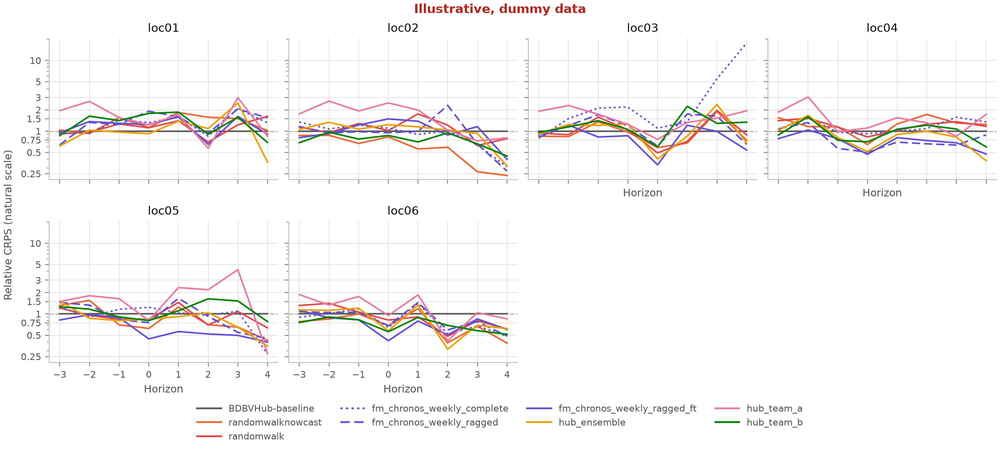
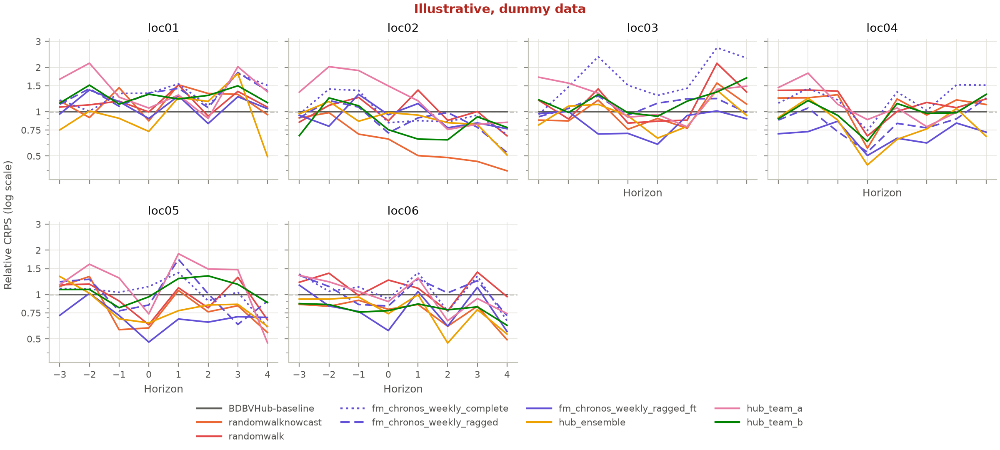
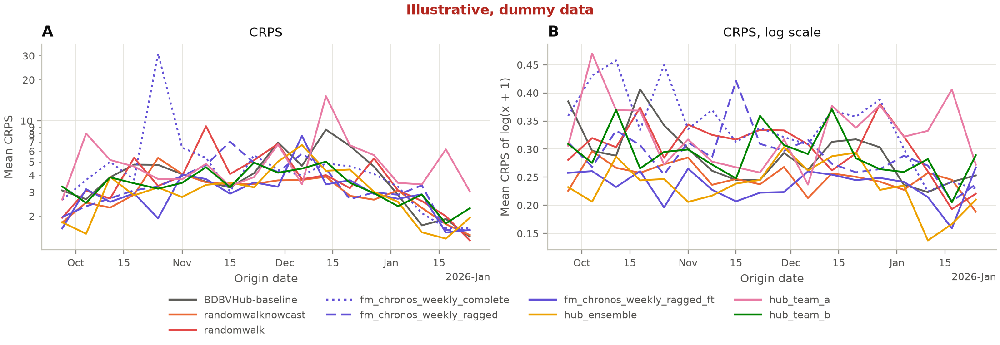
| study | model | metric | horizon | score | log_score | bias | coverage_50 | coverage_90 | n | rel_score | rel_log_score |
|---|---|---|---|---|---|---|---|---|---|---|---|
| ebola | BDBVHub-baseline | crps | -3 | 1.06 | 0.116 | -0.0412 | 0.759 | 0.981 | 108 | 1 | 1 |
| ebola | BDBVHub-baseline | crps | -2 | 1.08 | 0.113 | -0.0332 | 0.824 | 0.981 | 108 | 1 | 1 |
| ebola | BDBVHub-baseline | crps | -1 | 1.48 | 0.157 | -0.0709 | 0.778 | 0.981 | 108 | 1 | 1 |
| ebola | BDBVHub-baseline | crps | 0 | 2.78 | 0.291 | -0.0121 | 0.639 | 0.954 | 108 | 1 | 1 |
| ebola | BDBVHub-baseline | crps | 1 | 3.64 | 0.308 | 0.0156 | 0.735 | 0.961 | 102 | 1 | 1 |
| ebola | BDBVHub-baseline | crps | 2 | 5.44 | 0.44 | 0.00839 | 0.583 | 0.938 | 96 | 1 | 1 |
| ebola | BDBVHub-baseline | crps | 3 | 7.19 | 0.405 | 0.0537 | 0.756 | 1 | 90 | 1 | 1 |
| ebola | BDBVHub-baseline | crps | 4 | 13.3 | 0.6 | 0.0888 | 0.589 | 0.911 | 90 | 1 | 1 |
| ebola | fm_chronos_weekly_complete | crps | -3 | 1.12 | 0.13 | -0.251 | 0.685 | 0.889 | 108 | 1.05 | 1.12 |
| ebola | fm_chronos_weekly_complete | crps | -2 | 1.24 | 0.142 | -0.197 | 0.63 | 0.917 | 108 | 1.15 | 1.25 |
| ebola | fm_chronos_weekly_complete | crps | -1 | 1.95 | 0.217 | -0.148 | 0.556 | 0.861 | 108 | 1.32 | 1.38 |
| ebola | fm_chronos_weekly_complete | crps | 0 | 3.14 | 0.309 | -0.0892 | 0.509 | 0.861 | 108 | 1.13 | 1.06 |
| ebola | fm_chronos_weekly_complete | crps | 1 | 4.03 | 0.401 | -0.0824 | 0.539 | 0.882 | 102 | 1.11 | 1.3 |
| ebola | fm_chronos_weekly_complete | crps | 2 | 4.96 | 0.44 | -0.0562 | 0.562 | 0.906 | 96 | 0.911 | 0.999 |
| ebola | fm_chronos_weekly_complete | crps | 3 | 9.15 | 0.599 | 0.0456 | 0.433 | 0.878 | 90 | 1.27 | 1.48 |
| ebola | fm_chronos_weekly_complete | crps | 4 | 22.8 | 0.644 | 0.0175 | 0.556 | 0.9 | 90 | 1.71 | 1.07 |
| ebola | fm_chronos_weekly_ragged | crps | -3 | 1.07 | 0.123 | -0.2 | 0.62 | 0.833 | 108 | 1.01 | 1.06 |
| ebola | fm_chronos_weekly_ragged | crps | -2 | 1.23 | 0.134 | -0.00838 | 0.593 | 0.87 | 108 | 1.14 | 1.18 |
| ebola | fm_chronos_weekly_ragged | crps | -1 | 1.53 | 0.149 | -0.0729 | 0.602 | 0.898 | 108 | 1.04 | 0.946 |
| ebola | fm_chronos_weekly_ragged | crps | 0 | 2.58 | 0.245 | 0.00569 | 0.537 | 0.815 | 108 | 0.925 | 0.842 |
| ebola | fm_chronos_weekly_ragged | crps | 1 | 3.76 | 0.369 | -0.0302 | 0.441 | 0.804 | 102 | 1.03 | 1.2 |
| ebola | fm_chronos_weekly_ragged | crps | 2 | 6.98 | 0.443 | -0.0204 | 0.479 | 0.76 | 96 | 1.28 | 1.01 |
| ebola | fm_chronos_weekly_ragged | crps | 3 | 5.99 | 0.421 | 0.0312 | 0.556 | 0.844 | 90 | 0.833 | 1.04 |
| ebola | fm_chronos_weekly_ragged | crps | 4 | 7.24 | 0.545 | 0.0256 | 0.411 | 0.8 | 90 | 0.543 | 0.908 |
| ebola | fm_chronos_weekly_ragged_ft | crps | -3 | 0.958 | 0.105 | 0.0956 | 0.667 | 0.944 | 108 | 0.902 | 0.908 |
| ebola | fm_chronos_weekly_ragged_ft | crps | -2 | 1.12 | 0.108 | 0.237 | 0.667 | 0.944 | 108 | 1.04 | 0.954 |
| ebola | fm_chronos_weekly_ragged_ft | crps | -1 | 1.46 | 0.141 | 0.137 | 0.602 | 0.972 | 108 | 0.991 | 0.895 |
| ebola | fm_chronos_weekly_ragged_ft | crps | 0 | 2.32 | 0.192 | 0.131 | 0.676 | 0.944 | 108 | 0.832 | 0.659 |
| ebola | fm_chronos_weekly_ragged_ft | crps | 1 | 3.31 | 0.267 | 0.0158 | 0.618 | 0.922 | 102 | 0.91 | 0.867 |
| ebola | fm_chronos_weekly_ragged_ft | crps | 2 | 4.03 | 0.32 | 0.117 | 0.583 | 0.927 | 96 | 0.741 | 0.726 |
| ebola | fm_chronos_weekly_ragged_ft | crps | 3 | 7.11 | 0.38 | 0.122 | 0.644 | 0.889 | 90 | 0.988 | 0.938 |
| ebola | fm_chronos_weekly_ragged_ft | crps | 4 | 6.6 | 0.455 | 0.0624 | 0.578 | 0.889 | 90 | 0.494 | 0.758 |
| ebola | hub_ensemble | crps | -3 | 1.07 | 0.11 | 0.202 | 0.63 | 0.917 | 108 | 1.01 | 0.947 |
| ebola | hub_ensemble | crps | -2 | 1.33 | 0.122 | 0.171 | 0.602 | 0.907 | 108 | 1.23 | 1.08 |
| ebola | hub_ensemble | crps | -1 | 1.51 | 0.141 | 0.114 | 0.639 | 0.926 | 108 | 1.02 | 0.893 |
| ebola | hub_ensemble | crps | 0 | 2.43 | 0.21 | 0.179 | 0.63 | 0.907 | 108 | 0.873 | 0.722 |
| ebola | hub_ensemble | crps | 1 | 3.49 | 0.262 | 0.115 | 0.559 | 0.892 | 102 | 0.961 | 0.85 |
| ebola | hub_ensemble | crps | 2 | 4.56 | 0.346 | 0.0401 | 0.531 | 0.854 | 96 | 0.839 | 0.786 |
| ebola | hub_ensemble | crps | 3 | 7.57 | 0.427 | 0.203 | 0.556 | 0.856 | 90 | 1.05 | 1.06 |
| ebola | hub_ensemble | crps | 4 | 5.39 | 0.363 | 0.0838 | 0.633 | 0.967 | 90 | 0.404 | 0.605 |
| ebola | hub_team_a | crps | -3 | 1.94 | 0.168 | 0.605 | 0.38 | 0.741 | 108 | 1.83 | 1.45 |
| ebola | hub_team_a | crps | -2 | 2.48 | 0.193 | 0.605 | 0.398 | 0.685 | 108 | 2.3 | 1.7 |
| ebola | hub_team_a | crps | -1 | 2.39 | 0.204 | 0.449 | 0.491 | 0.778 | 108 | 1.62 | 1.3 |
| ebola | hub_team_a | crps | 0 | 3.89 | 0.284 | 0.354 | 0.444 | 0.824 | 108 | 1.4 | 0.974 |
| ebola | hub_team_a | crps | 1 | 5.9 | 0.388 | 0.358 | 0.441 | 0.775 | 102 | 1.62 | 1.26 |
| ebola | hub_team_a | crps | 2 | 5.43 | 0.39 | 0.194 | 0.51 | 0.812 | 96 | 0.998 | 0.887 |
| ebola | hub_team_a | crps | 3 | 9.39 | 0.491 | 0.272 | 0.367 | 0.811 | 90 | 1.31 | 1.21 |
| ebola | hub_team_a | crps | 4 | 12.8 | 0.572 | 0.123 | 0.422 | 0.8 | 90 | 0.957 | 0.953 |
| ebola | hub_team_b | crps | -3 | 0.915 | 0.113 | -0.18 | 0.75 | 0.981 | 108 | 0.861 | 0.981 |
| ebola | hub_team_b | crps | -2 | 1.26 | 0.128 | -0.00593 | 0.722 | 0.981 | 108 | 1.17 | 1.13 |
| ebola | hub_team_b | crps | -1 | 1.42 | 0.155 | 0.034 | 0.741 | 0.981 | 108 | 0.963 | 0.988 |
| ebola | hub_team_b | crps | 0 | 2.48 | 0.257 | 0.00208 | 0.639 | 0.944 | 108 | 0.89 | 0.882 |
| ebola | hub_team_b | crps | 1 | 3.27 | 0.309 | 0.0478 | 0.667 | 0.971 | 102 | 0.901 | 1 |
| ebola | hub_team_b | crps | 2 | 6.09 | 0.444 | 0.109 | 0.521 | 0.938 | 96 | 1.12 | 1.01 |
| ebola | hub_team_b | crps | 3 | 6.39 | 0.44 | 0.0899 | 0.656 | 0.989 | 90 | 0.889 | 1.09 |
| ebola | hub_team_b | crps | 4 | 7.87 | 0.597 | -0.0296 | 0.567 | 0.922 | 90 | 0.59 | 0.995 |
| ebola | randomwalk | crps | -3 | 1.21 | 0.133 | -0.141 | 0.75 | 0.935 | 108 | 1.14 | 1.15 |
| ebola | randomwalk | crps | -2 | 1.19 | 0.134 | -0.179 | 0.722 | 0.991 | 108 | 1.1 | 1.18 |
| ebola | randomwalk | crps | -1 | 1.79 | 0.185 | -0.169 | 0.657 | 0.972 | 108 | 1.21 | 1.17 |
| ebola | randomwalk | crps | 0 | 2.6 | 0.251 | -0.0209 | 0.657 | 0.991 | 108 | 0.932 | 0.861 |
| ebola | randomwalk | crps | 1 | 4.24 | 0.35 | -0.0376 | 0.598 | 0.971 | 102 | 1.17 | 1.14 |
| ebola | randomwalk | crps | 2 | 4.73 | 0.397 | -0.0362 | 0.698 | 0.948 | 96 | 0.87 | 0.902 |
| ebola | randomwalk | crps | 3 | 6.83 | 0.543 | -0.106 | 0.622 | 0.956 | 90 | 0.95 | 1.34 |
| ebola | randomwalk | crps | 4 | 11.7 | 0.564 | 0.0386 | 0.667 | 0.956 | 90 | 0.878 | 0.939 |
| ebola | randomwalknowcast | crps | -3 | 1.08 | 0.12 | 0.0284 | 0.704 | 0.972 | 108 | 1.02 | 1.04 |
| ebola | randomwalknowcast | crps | -2 | 1.05 | 0.116 | 0.0351 | 0.815 | 1 | 108 | 0.978 | 1.03 |
| ebola | randomwalknowcast | crps | -1 | 1.52 | 0.159 | 0.0807 | 0.722 | 0.981 | 108 | 1.03 | 1.01 |
| ebola | randomwalknowcast | crps | 0 | 2.2 | 0.202 | 0.083 | 0.778 | 0.972 | 108 | 0.789 | 0.692 |
| ebola | randomwalknowcast | crps | 1 | 3.41 | 0.304 | 0.131 | 0.706 | 0.98 | 102 | 0.937 | 0.986 |
| ebola | randomwalknowcast | crps | 2 | 4.61 | 0.345 | 0.0479 | 0.719 | 0.979 | 96 | 0.849 | 0.785 |
| ebola | randomwalknowcast | crps | 3 | 5.35 | 0.398 | 0.0416 | 0.7 | 0.989 | 90 | 0.743 | 0.982 |
| ebola | randomwalknowcast | crps | 4 | 6.85 | 0.423 | 0.0758 | 0.744 | 0.989 | 90 | 0.513 | 0.705 |
| study | model | metric | location | stratum | score | log_score | bias | coverage_50 | coverage_90 | n | rel_score | rel_log_score |
|---|---|---|---|---|---|---|---|---|---|---|---|---|
| ebola | BDBVHub-baseline | crps | loc01 | all | 2.58 | 0.228 | 0.0282 | 0.733 | 0.978 | 135 | 1 | 1 |
| ebola | BDBVHub-baseline | crps | loc02 | all | 9.34 | 0.312 | 0.0321 | 0.681 | 0.956 | 135 | 1 | 1 |
| ebola | BDBVHub-baseline | crps | loc03 | all | 2.69 | 0.266 | -0.055 | 0.696 | 0.97 | 135 | 1 | 1 |
| ebola | BDBVHub-baseline | crps | loc04 | all | 3.77 | 0.309 | -0.0163 | 0.733 | 0.963 | 135 | 1 | 1 |
| ebola | BDBVHub-baseline | crps | loc05 | all | 2.44 | 0.322 | 0.014 | 0.719 | 0.956 | 135 | 1 | 1 |
| ebola | BDBVHub-baseline | crps | loc06 | all | 4.6 | 0.321 | -0.016 | 0.704 | 0.963 | 135 | 1 | 1 |
| ebola | fm_chronos_weekly_complete | crps | loc01 | all | 3.4 | 0.319 | -0.077 | 0.578 | 0.919 | 135 | 1.32 | 1.4 |
| ebola | fm_chronos_weekly_complete | crps | loc02 | all | 5.91 | 0.277 | -0.107 | 0.541 | 0.874 | 135 | 0.632 | 0.889 |
| ebola | fm_chronos_weekly_complete | crps | loc03 | all | 14.7 | 0.475 | -0.0693 | 0.496 | 0.837 | 135 | 5.47 | 1.78 |
| ebola | fm_chronos_weekly_complete | crps | loc04 | all | 4.69 | 0.382 | -0.0852 | 0.593 | 0.904 | 135 | 1.24 | 1.24 |
| ebola | fm_chronos_weekly_complete | crps | loc05 | all | 1.92 | 0.31 | -0.096 | 0.63 | 0.941 | 135 | 0.787 | 0.964 |
| ebola | fm_chronos_weekly_complete | crps | loc06 | all | 3.17 | 0.319 | -0.174 | 0.533 | 0.844 | 135 | 0.689 | 0.993 |
| ebola | fm_chronos_weekly_ragged | crps | loc01 | all | 3.75 | 0.309 | 0.104 | 0.481 | 0.837 | 135 | 1.45 | 1.36 |
| ebola | fm_chronos_weekly_ragged | crps | loc02 | all | 7.03 | 0.249 | -0.0271 | 0.526 | 0.822 | 135 | 0.752 | 0.798 |
| ebola | fm_chronos_weekly_ragged | crps | loc03 | all | 2.92 | 0.295 | -0.0681 | 0.593 | 0.83 | 135 | 1.09 | 1.11 |
| ebola | fm_chronos_weekly_ragged | crps | loc04 | all | 2.78 | 0.267 | -0.0933 | 0.585 | 0.859 | 135 | 0.738 | 0.864 |
| ebola | fm_chronos_weekly_ragged | crps | loc05 | all | 1.89 | 0.318 | -0.0384 | 0.526 | 0.807 | 135 | 0.776 | 0.988 |
| ebola | fm_chronos_weekly_ragged | crps | loc06 | all | 3.38 | 0.32 | -0.0974 | 0.489 | 0.822 | 135 | 0.734 | 0.998 |
| ebola | fm_chronos_weekly_ragged_ft | crps | loc01 | all | 2.82 | 0.245 | 0.166 | 0.57 | 0.911 | 135 | 1.09 | 1.07 |
| ebola | fm_chronos_weekly_ragged_ft | crps | loc02 | all | 7.62 | 0.276 | 0.0902 | 0.548 | 0.896 | 135 | 0.816 | 0.886 |
| ebola | fm_chronos_weekly_ragged_ft | crps | loc03 | all | 2.03 | 0.223 | 0.113 | 0.637 | 0.978 | 135 | 0.754 | 0.839 |
| ebola | fm_chronos_weekly_ragged_ft | crps | loc04 | all | 2.4 | 0.213 | 0.0893 | 0.644 | 0.956 | 135 | 0.637 | 0.688 |
| ebola | fm_chronos_weekly_ragged_ft | crps | loc05 | all | 1.26 | 0.218 | 0.136 | 0.733 | 0.941 | 135 | 0.517 | 0.678 |
| ebola | fm_chronos_weekly_ragged_ft | crps | loc06 | all | 3.06 | 0.247 | 0.104 | 0.652 | 0.904 | 135 | 0.665 | 0.77 |
| ebola | hub_ensemble | crps | loc01 | all | 2.63 | 0.225 | 0.109 | 0.622 | 0.896 | 135 | 1.02 | 0.99 |
| ebola | hub_ensemble | crps | loc02 | all | 6.79 | 0.249 | 0.197 | 0.533 | 0.859 | 135 | 0.726 | 0.798 |
| ebola | hub_ensemble | crps | loc03 | all | 2.63 | 0.25 | 0.131 | 0.637 | 0.919 | 135 | 0.977 | 0.94 |
| ebola | hub_ensemble | crps | loc04 | all | 2.71 | 0.237 | 0.112 | 0.578 | 0.933 | 135 | 0.717 | 0.766 |
| ebola | hub_ensemble | crps | loc05 | all | 1.68 | 0.247 | 0.16 | 0.689 | 0.948 | 135 | 0.69 | 0.769 |
| ebola | hub_ensemble | crps | loc06 | all | 3.16 | 0.228 | 0.131 | 0.533 | 0.867 | 135 | 0.687 | 0.711 |
| ebola | hub_team_a | crps | loc01 | all | 3.56 | 0.315 | 0.408 | 0.385 | 0.726 | 135 | 1.38 | 1.38 |
| ebola | hub_team_a | crps | loc02 | all | 10.5 | 0.335 | 0.36 | 0.4 | 0.778 | 135 | 1.12 | 1.07 |
| ebola | hub_team_a | crps | loc03 | all | 3.89 | 0.314 | 0.361 | 0.385 | 0.793 | 135 | 1.45 | 1.18 |
| ebola | hub_team_a | crps | loc04 | all | 5.26 | 0.334 | 0.379 | 0.519 | 0.778 | 135 | 1.39 | 1.08 |
| ebola | hub_team_a | crps | loc05 | all | 3.95 | 0.368 | 0.357 | 0.467 | 0.815 | 135 | 1.62 | 1.14 |
| ebola | hub_team_a | crps | loc06 | all | 4.53 | 0.294 | 0.417 | 0.437 | 0.77 | 135 | 0.984 | 0.915 |
| ebola | hub_team_b | crps | loc01 | all | 3 | 0.289 | 0.0593 | 0.615 | 0.933 | 135 | 1.16 | 1.27 |
| ebola | hub_team_b | crps | loc02 | all | 5.84 | 0.248 | 0.0129 | 0.652 | 0.963 | 135 | 0.625 | 0.795 |
| ebola | hub_team_b | crps | loc03 | all | 3.35 | 0.324 | -0.023 | 0.593 | 0.97 | 135 | 1.25 | 1.22 |
| ebola | hub_team_b | crps | loc04 | all | 3.38 | 0.312 | -0.0105 | 0.659 | 0.978 | 135 | 0.895 | 1.01 |
| ebola | hub_team_b | crps | loc05 | all | 2.67 | 0.344 | -0.0201 | 0.763 | 0.978 | 135 | 1.1 | 1.07 |
| ebola | hub_team_b | crps | loc06 | all | 2.93 | 0.245 | 0.0156 | 0.689 | 0.963 | 135 | 0.637 | 0.764 |
| ebola | randomwalk | crps | loc01 | all | 3.16 | 0.261 | -0.0745 | 0.711 | 0.97 | 135 | 1.23 | 1.15 |
| ebola | randomwalk | crps | loc02 | all | 8.64 | 0.293 | -0.0773 | 0.622 | 0.948 | 135 | 0.925 | 0.939 |
| ebola | randomwalk | crps | loc03 | all | 2.57 | 0.314 | -0.131 | 0.689 | 0.985 | 135 | 0.956 | 1.18 |
| ebola | randomwalk | crps | loc04 | all | 4.46 | 0.34 | -0.0299 | 0.659 | 0.963 | 135 | 1.18 | 1.1 |
| ebola | randomwalk | crps | loc05 | all | 2.1 | 0.291 | -0.0214 | 0.704 | 0.963 | 135 | 0.862 | 0.903 |
| ebola | randomwalk | crps | loc06 | all | 3.42 | 0.349 | -0.172 | 0.652 | 0.963 | 135 | 0.743 | 1.09 |
| ebola | randomwalknowcast | crps | loc01 | all | 3.37 | 0.267 | 0.114 | 0.689 | 0.941 | 135 | 1.31 | 1.17 |
| ebola | randomwalknowcast | crps | loc02 | all | 3.65 | 0.166 | 0.0877 | 0.719 | 0.993 | 135 | 0.39 | 0.532 |
| ebola | randomwalknowcast | crps | loc03 | all | 2.43 | 0.267 | 0.0206 | 0.748 | 1 | 135 | 0.905 | 1 |
| ebola | randomwalknowcast | crps | loc04 | all | 4.77 | 0.326 | 0.0246 | 0.711 | 0.985 | 135 | 1.26 | 1.05 |
| ebola | randomwalknowcast | crps | loc05 | all | 1.69 | 0.245 | 0.0875 | 0.785 | 0.993 | 135 | 0.692 | 0.762 |
| ebola | randomwalknowcast | crps | loc06 | all | 2.76 | 0.228 | 0.0581 | 0.77 | 0.985 | 135 | 0.601 | 0.712 |